VoiceBank AI · Hệ thống gọi điện tư vấn
VoiceBank AI — Hướng dẫn từng tính năng có ảnh
Mỗi mục dưới đây là một ảnh chụp thật của app, các vùng đáng chú ý được khoanh và đánh số. Dưới mỗi ảnh, từng số được giải thích theo ba lớp: nó là gì, điều kiện để nó hoạt động, và vì sao nó được làm như thế. Ảnh chụp trên máy vừa dựng nên phần lớn bảng còn rỗng — đó là trạng thái đúng của máy mới, và bản thân nó cũng là thông tin.
Bắt đầu từ đây
Thanh bên — bản đồ 19 trang
Mọi thứ trong app nằm sau 19 nút này. Chúng được xếp theo việc bạn đang làm, không theo module kỹ thuật.
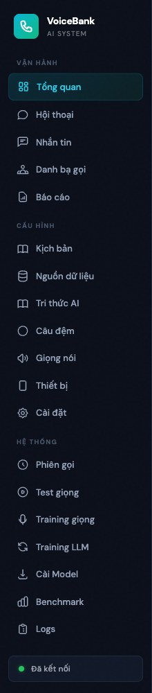
- 1Nhóm “Vận hành” — 5 trang
Tổng quan, Hội thoại, Nhắn tin, Danh bạ gọi, Báo cáo. Đây là việc hằng ngày: xem tình hình, gọi, đọc kết quả.
Điều kiện Người bán hàng thường chỉ dùng đúng nhóm này.
Vì sao Trước đây 12 tab xếp phẳng ngang hàng nhau, nên việc dùng mỗi ngày bị chôn lẫn với việc chỉ làm một lần lúc dựng máy.
- 2Nhóm “Cấu hình” — 7 trang
Kịch bản, Nguồn dữ liệu, Tri thức AI, Câu đệm, Giọng nói, Thiết bị, Cài đặt. Quyết định bot nói gì và nói bằng giọng nào.
Điều kiện Mở khi đổi sản phẩm, đổi lãi suất, đổi giọng, hoặc cắm máy mới.
Vì sao Đây là nơi duy nhất thay đổi được nội dung bot nói. Không có cách nào “dặn miệng” bot.
- 3Nhóm “Hệ thống” — 7 trang
Phiên gọi, Test giọng, Training giọng, Training LLM, Cài Model, Benchmark, Logs. Việc kỹ thuật và việc chỉ làm một lần.
Điều kiện Lúc dựng máy mới, lúc truy lỗi, hoặc lúc muốn nâng chất lượng.
Vì sao Tách ra để người vận hành hằng ngày không bấm nhầm vào nút khởi động một buổi train dài mấy tiếng.
- 4Đèn trạng thái kết nối
Chấm xanh + chữ “Đã kết nối” nghĩa là trình duyệt đang nối được với máy chủ qua WebSocket.
Điều kiện Chấm tắt hoặc chữ đổi thành “Mất kết nối” thì mọi trang đều ngừng cập nhật.
Vì sao Là thứ cần nhìn đầu tiên khi có gì đó “không chạy”. Nhiều lỗi trông như lỗi tính năng thật ra chỉ là rớt kết nối.
Vận hành
Tổng quan
Màn hình mở đầu. Trả lời một câu hỏi duy nhất: hôm nay đang xảy ra chuyện gì.
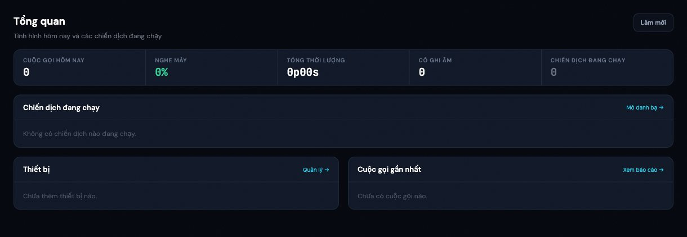
- 1Làm mới
Đọc lại số liệu từ máy chủ.
Điều kiện Số trên trang không tự chạy theo thời gian thực — phải bấm nút này.
Vì sao Trang tổng quan hỏi máy chủ nhiều bảng cùng lúc; tự động làm mới liên tục sẽ chiếm tài nguyên đúng lúc máy đang bận gọi.
- 2Dải năm ô số của hôm nay
Cuộc gọi hôm nay · tỉ lệ nghe máy · tổng thời lượng · số cuộc có ghi âm · số chiến dịch đang chạy.
Điều kiện Đếm theo ngày. Cuộc gọi lúc nửa đêm rơi sang ngày mới nên không hiện ở đây.
Vì sao Tỉ lệ nghe máy là con số cho biết danh sách số có dùng được không — thấp bất thường thường là lỗi danh sách chứ không phải lỗi bot.
- 3Chiến dịch đang chạy
Danh sách chiến dịch tự động đang quay số, kèm lối tắt “Mở danh bạ →”.
Điều kiện Rỗng khi chưa bấm chạy chiến dịch nào ở trang Danh bạ gọi.
Vì sao Trước đây mở app lên là vào thẳng khung chat, nên không nhìn thấy chiến dịch đang chạy cho tới khi tự đi tìm.
- 4Thiết bị
Máy đang nối và máy rụng, kèm lối tắt “Quản lý →” sang trang Thiết bị.
Điều kiện Rỗng khi chưa khai máy nào.
Vì sao Đặt ngay trang chủ vì máy rụng giữa chiến dịch là lỗi im lặng: chiến dịch vẫn “đang chạy” nhưng không cuộc nào ra.
- 5Cuộc gọi gần nhất
Vài cuộc mới nhất, kèm lối tắt “Xem báo cáo →”.
Điều kiện Chỉ hiện cuộc gọi thật; phiên thử trên trang Hội thoại không tính.
Vì sao Để soi nhanh sau khi vừa đổi kịch bản hoặc giọng, không phải mở hẳn trang Báo cáo rồi lọc.
Vận hành
Hội thoại
Nói thử với AI có tiếng, y như đang gọi điện. Đây là chỗ nghiệm thu giọng và đo độ trễ.
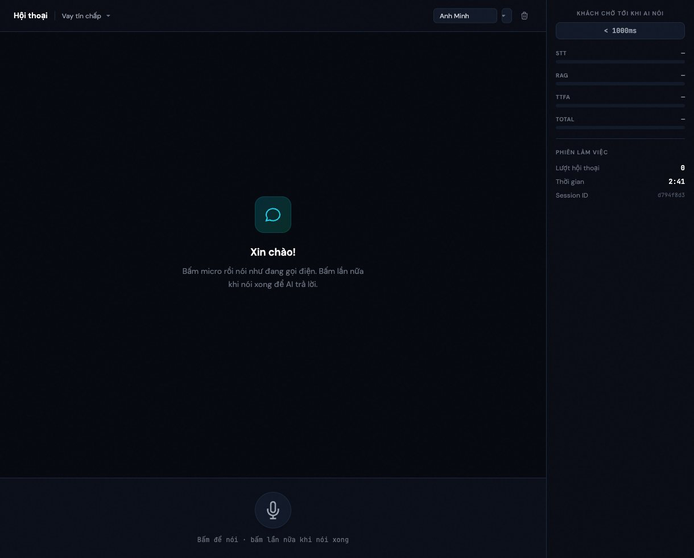
- 1Chọn sản phẩm
Đổi kịch bản mà AI đang đóng vai: Vay tín chấp · Vay mua nhà · Thẻ tín dụng · Tiết kiệm.
Điều kiện Đổi giữa chừng sẽ bắt đầu một mạch tư vấn khác; nên đổi trước khi bấm micro.
Vì sao Cùng một câu hỏi nhưng khác sản phẩm thì tài liệu được tra cũng khác — đây là công tắc quyết định bot lấy số ở đâu.
- 2Tên khách
Tên bot dùng để xưng hô với người đối diện trong phiên thử này.
Điều kiện Để trống thì bot xưng hô chung chung.
Vì sao Xưng hô sai tên là lỗi khách nhận ra ngay; thử trước ở đây rẻ hơn nghe lại bản ghi sau.
- 3Chọn giọng
Giọng bot dùng để đọc trong phiên thử.
Điều kiện Danh sách lấy từ trang Giọng nói. Chưa nạp giọng nào thì chỉ có giọng mặc định.
Vì sao Cho phép đổi giọng ngay tại chỗ thử, không phải nhảy sang trang khác rồi quay lại.
- 4Ngưỡng “khách chờ tới khi AI nói”
Mốc chuẩn: dưới
1000ms. Vượt mốc này là khách bắt đầu cảm thấy máy chậm.Điều kiện Là ngưỡng cố định để đối chiếu, không phải số đo.
Vì sao Có một mốc hiện sẵn thì không phải nhớ “bao nhiêu là đạt” mỗi lần thử.
- 5Bốn thước đo từng khâu
STT (nghe ra chữ) · RAG (tra tài liệu) · TTFA (bao lâu tới tiếng đầu tiên) · TOTAL (cả lượt). Đơn vị mili-giây.
Điều kiện Hiện dấu
—cho tới khi xong lượt đầu tiên.Vì sao Tách bốn khâu để khi chậm thì biết chậm ở đâu, thay vì chỉ biết “chậm”. TTFA quan trọng hơn TOTAL vì khách nghe tiếng đầu là hết sốt ruột.
- 6Phiên làm việc
Số lượt hội thoại · thời gian phiên · mã phiên (Session ID).
Điều kiện Session ID khác dấu
—chính là bằng chứng đường truyền hai chiều đã thông.Vì sao Mã phiên là thứ để tra ngược sang trang Phiên gọi khi muốn xem lại đúng buổi thử này.
- 7Khung hội thoại
Từng lượt nói hiện ra ở đây: câu bạn nói (đã chuyển thành chữ) và câu bot trả lời.
Điều kiện Bong bóng màu lỗi nghĩa là máy chủ trả lỗi — thường do thiếu Ollama / PhoWhisper / TTS chứ không phải lỗi giao diện.
Vì sao Hiện cả phần chữ mà máy nghe được để phân biệt “bot trả lời sai” với “máy nghe nhầm câu hỏi” — hai lỗi rất khác nhau.
- 8Nút micro
Bấm để bắt đầu nói, bấm lần nữa khi nói xong để AI trả lời.
Điều kiện Cần trình duyệt cho phép dùng micro. Cần dịch vụ nghe (STT) đang bật.
Vì sao Bấm hai lần thay vì tự nhận im lặng, để bạn chủ động quyết định lúc nào là “đã nói xong” khi đang thử các câu cụt.
Vận hành
Nhắn tin
Cùng bộ não với trang Hội thoại nhưng chạy bằng chữ, không phát tiếng — kèm phiếu soi cho biết vì sao AI trả lời như vậy.
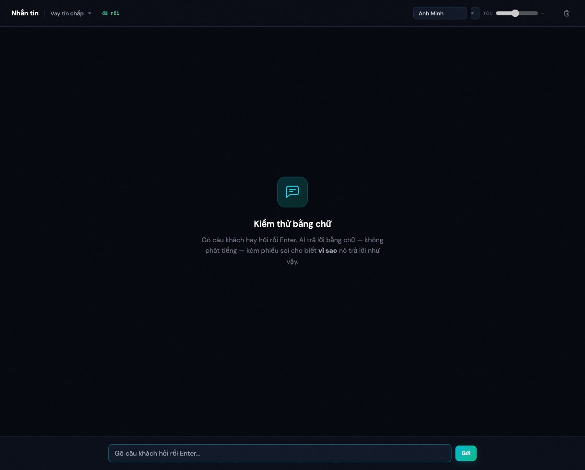
- 1Chọn sản phẩm
Giống trang Hội thoại: đổi kịch bản đang đóng vai.
Điều kiện Đổi trước khi gõ câu hỏi.
Vì sao Để thử cùng một câu hỏi trên nhiều sản phẩm, xem bot có lấy nhầm tài liệu không.
- 2Trạng thái kết nối riêng của trang
Hiện “chưa nối” hoặc “đã nối” — trang này mở một đường WebSocket riêng.
Điều kiện Còn “chưa nối” thì gõ gì cũng không có trả lời.
Vì sao Tách khỏi đèn chung ở thanh bên vì đây là đường riêng; đèn chung xanh không đảm bảo đường này đã mở.
- 3Tên khách
Tên dùng để xưng hô trong phiên chữ.
Điều kiện Để trống thì xưng chung chung.
Vì sao Cùng lý do với trang Hội thoại: bắt lỗi xưng hô sớm.
- 4Chọn giọng
Chọn giọng để lấy đúng tốc đọc riêng của giọng đó.
Điều kiện Trang này không phát tiếng, nên chọn giọng chỉ ảnh hưởng tới thanh Tốc bên cạnh.
Vì sao Mỗi giọng có tốc riêng; muốn chỉnh tốc thì phải biết đang chỉnh cho giọng nào.
- 5Thanh Tốc + nút hoàn nguyên
Kéo để đổi tốc đọc của giọng đang chọn; số bên cạnh là hệ số; nút
↺trả về mặc định.Điều kiện Đổi ở đây là đổi tốc của giọng, áp cho mọi nơi dùng giọng đó.
Vì sao Đặt ngay cạnh chỗ thử để chỉnh xong thử lại được luôn, không phải sang trang Giọng nói rồi quay về.
- 6Khung trả lời + phiếu soi
Câu trả lời của AI, kèm phiếu soi cho biết nó lấy mảnh tài liệu nào để trả lời như vậy.
Điều kiện Phiếu soi chỉ có ý nghĩa khi tài liệu đã được nạp ở trang Tri thức AI.
Vì sao Không có phiếu soi thì khi bot đọc sai số bạn không biết là tài liệu sai hay bot bịa — hai lỗi phải sửa ở hai chỗ khác nhau.
- 7Ô gõ câu hỏi
Gõ câu khách hay hỏi rồi Enter.
Điều kiện Enter gửi; Shift+Enter xuống dòng.
Vì sao Gõ nhanh hơn nói, nên đây là chỗ chạy nhiều câu thử liên tiếp.
- 8Gửi
Gửi câu đang gõ.
Điều kiện Tương đương bấm Enter.
Vì sao Có nút để người không quen phím tắt vẫn dùng được.
Vận hành
Danh bạ gọi
Kho số khách hàng và nơi bấm chạy chiến dịch. Danh bạ chỉ giữ số; việc bấm số do máy khai ở trang Thiết bị làm.
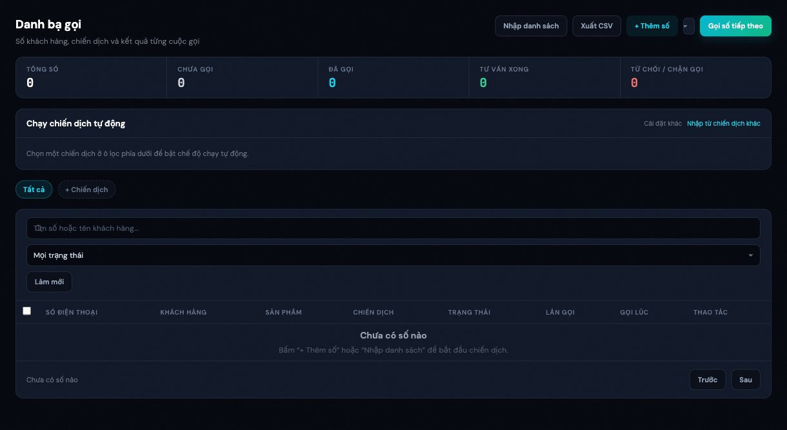
- 1Nhập danh sách
Nạp nhiều số cùng lúc từ file CSV hoặc dán thẳng danh sách vào ô.
Điều kiện Nạp được vào một chiến dịch cụ thể, chọn ngay trong hộp nhập.
Vì sao Đợt gọi thật thường vài trăm số; thêm tay từng số là không khả thi.
- 2Xuất CSV
Tải danh sách đang hiển thị ra file.
Điều kiện Xuất đúng tập đang lọc, không phải toàn bộ danh bạ.
Vì sao Để lọc ra nhóm cần rồi mang sang nơi khác xử lý, ví dụ danh sách đã từ chối để loại khỏi đợt sau.
- 3+ Thêm số
Mở khung khai một số lẻ: số điện thoại, tên khách, sản phẩm, chiến dịch, ghi chú.
Điều kiện Dùng khi thêm vài số để thử.
Vì sao Thử một số thật trước khi đổ cả danh sách vào là cách rẻ nhất để bắt lỗi kịch bản.
- 4Chọn giọng cho cuộc gọi
Giọng dùng khi bấm gọi từ trang này.
Điều kiện Áp cho cuộc gọi tay; chiến dịch tự động có ô chọn giọng riêng bên trong.
Vì sao Đặt cạnh nút gọi để không gọi nhầm bằng giọng của lần thử trước.
- 5Gọi số tiếp theo
Gọi tay một số trong hàng đợi.
Điều kiện Cần ít nhất một thiết bị sẵn sàng ở trang Thiết bị.
Vì sao Đường gọi tay giữ lại để thử từng số mà không phải bật cả chiến dịch tự động.
- 6Dải năm ô số của danh bạ
Tổng số · chưa gọi · đã gọi · tư vấn xong · từ chối hoặc chặn gọi.
Điều kiện Đếm trên tập đang lọc.
Vì sao Ô “từ chối / chặn gọi” tô đỏ vì đó là nhóm phải loại khỏi đợt sau, gọi lại là gây phiền.
- 7Chạy chiến dịch tự động
Khối bật chế độ máy tự quay số lần lượt.
Điều kiện Phải chọn một chiến dịch ở ô lọc bên dưới trước, nút mới bật lên. Ảnh chụp đang ở trạng thái chưa chọn.
Vì sao Khoá cho tới khi chọn chiến dịch để không lỡ tay quay số cho toàn bộ danh bạ.
- 8Cài đặt khác
Mở phần cấu hình sâu của chiến dịch: số lần gọi lại, khoảng cách giữa hai lần, khung giờ được phép gọi, có ghi âm không, có đoán giới tính không.
Điều kiện Ẩn mặc định, bấm mới mở.
Vì sao Gấp lại vì đây là thứ đặt một lần rồi thôi, không phải thứ chỉnh mỗi ngày.
- 9Ô lọc chiến dịch
Chọn chiến dịch để xem và để bật chế độ chạy tự động. Nút “+ Chiến dịch” tạo mới.
Điều kiện Chọn ở đây là điều kiện để khối phía trên bật lên.
Vì sao Một danh bạ chứa nhiều đợt gọi khác nhau; không tách chiến dịch thì không biết số nào thuộc đợt nào.
- 10Tìm số hoặc tên khách
Lọc nhanh theo số điện thoại hoặc tên.
Điều kiện Tìm trong tập đang chọn.
Vì sao Để tra một khách cụ thể khi họ gọi lại, không phải lật từng trang.
- 11Lọc theo trạng thái
Mọi trạng thái · Chưa gọi · Đang gọi · Đã tư vấn · Không nghe máy…
Điều kiện Kết hợp được với ô tìm phía trên.
Vì sao Lọc “chưa gọi” là cách dựng danh sách cho đợt tiếp theo mà không gọi trùng người đã nghe.
- 12Bảng số + thao tác từng dòng
Số điện thoại, khách hàng, sản phẩm, chiến dịch, trạng thái, số lần gọi, gọi lúc nào, và nút thao tác.
Điều kiện Rỗng khi chưa có số nào, kèm gợi ý hai lối vào.
Vì sao Cột “lần gọi” cho biết số nào đã gọi lại nhiều lần mà vẫn không ai nghe — dấu hiệu số sai chứ không phải khách bận.
Vận hành
Báo cáo
Nơi xem lại việc đã làm: lọc cuộc gọi theo nhiều chiều, nghe lại ghi âm, đọc tóm tắt.
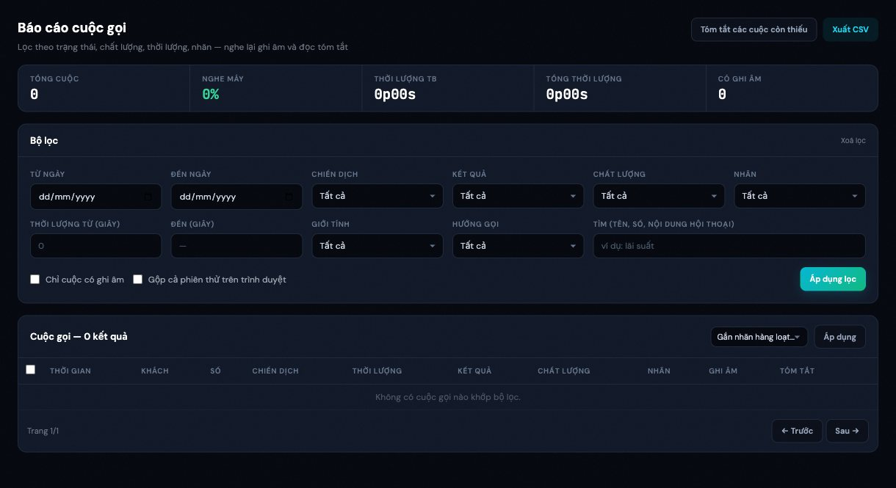
- 1Tóm tắt các cuộc còn thiếu
Chạy AI đọc lại những cuộc chưa có tóm tắt và sinh tóm tắt cho chúng.
Điều kiện Cần mô hình ngôn ngữ đang chạy. Chạy trên nhiều cuộc sẽ mất thời gian.
Vì sao Tóm tắt không sinh tự động lúc gọi để không tranh tài nguyên với cuộc gọi đang diễn ra.
- 2Xuất CSV
Tải danh sách cuộc gọi ra file.
Điều kiện Xuất đúng tập đang lọc.
Vì sao Để gửi báo cáo ra ngoài mà không phải chụp màn hình.
- 3Dải số tổng hợp
Số liệu gộp của tập đang lọc.
Điều kiện Đổi theo bộ lọc bên dưới.
Vì sao Lọc xong nhìn ngay được nhóm vừa lọc lớn cỡ nào, không phải đếm dòng.
- 4Bộ lọc hàng 1 — thời gian và phân loại
Từ ngày · đến ngày · chiến dịch · kết quả · chất lượng · nhãn.
Điều kiện Các ô kết hợp với nhau theo kiểu “và”.
Vì sao “Kết quả” là máy tự ghi (nghe máy, bận, hộp thư…), còn “nhãn” là người gắn tay — tách ra để phân biệt sự thật máy đo với đánh giá của người.
- 5Bộ lọc hàng 2 — thời lượng, giới tính, hướng gọi, tìm chữ
Thời lượng từ/đến giây · giới tính khách · gọi ra hay gọi vào · tìm chữ trong tên, số, và nội dung hội thoại.
Điều kiện Tìm trong nội dung chỉ chạy được với cuộc đã có bản ghi chữ.
Vì sao Lọc theo thời lượng là cách nhanh nhất tách cuộc “nhấc máy rồi dập ngay” khỏi cuộc tư vấn thật.
- 6Hai ô tick: chỉ cuộc có ghi âm · gộp cả phiên thử
Ô đầu bỏ qua cuộc không thu tiếng. Ô sau kéo cả những lần bạn tự thử ở trang Hội thoại vào danh sách.
Điều kiện Phiên thử mặc định bị ẩn.
Vì sao Phiên thử trên trang Hội thoại không quay số nên không phải cuộc gọi; để lẫn vào báo cáo sẽ làm sai mọi tỉ lệ.
- 7Áp dụng lọc
Chạy bộ lọc vừa đặt.
Điều kiện Bộ lọc không tự chạy khi đổi từng ô.
Vì sao Đợi bấm mới chạy vì mỗi lần lọc là một truy vấn nặng; tự chạy theo từng ký tự sẽ nghẽn.
- 8Gắn nhãn hàng loạt
Chọn nhiều dòng rồi gắn cùng một nhãn: Quan tâm · Không quan tâm · Follow chăm sóc thêm…
Điều kiện Phải tick chọn dòng trước, nút mới có tác dụng.
Vì sao Nhãn là dữ liệu để lọc lại về sau; gắn từng dòng cho vài trăm cuộc là việc không ai làm nổi.
- 9Bảng cuộc gọi
Thời gian, khách, số, chiến dịch, thời lượng, kết quả, chất lượng, nhãn, ghi âm, tóm tắt.
Điều kiện Cột ghi âm chỉ có khi bật ghi âm ở trang Cài đặt.
Vì sao Đặt ghi âm và tóm tắt cạnh nhau để nghe và đọc đối chiếu — tóm tắt do máy sinh nên phải kiểm được bằng tiếng gốc.
Cấu hình
Kịch bản
Quy định bot xưng là ai, chào thế nào, và luật riêng của ngành hàng.
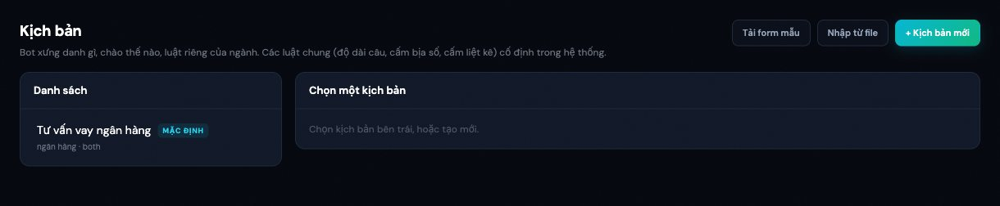
- 1Tải form mẫu
Tải về file mẫu để điền kịch bản ngoài app rồi nạp lại.
Điều kiện Dùng khi muốn soạn hàng loạt hoặc nhờ người khác điền.
Vì sao Bắt đầu từ file mẫu thì người điền không phải đoán định dạng, và các dòng mẫu đều đã đạt luật phong cách nên nhìn là biết viết sao.
- 2Nhập từ file
Nạp kịch bản đã điền sẵn từ file.
Điều kiện Định dạng phải khớp form mẫu ở nút bên trái.
Vì sao Đường đi kèm với nút tải form — hai nút này là một cặp.
- 3+ Kịch bản mới
Tạo một kịch bản trắng ngay trên trang.
Điều kiện Dùng khi chỉ thêm một kịch bản.
Vì sao Nhanh hơn vòng tải form → điền → nạp lại cho trường hợp đơn lẻ.
- 4Danh sách kịch bản
Các kịch bản đang có. Ảnh chụp cho thấy kịch bản mặc định “Tư vấn vay ngân hàng”.
Điều kiện Kịch bản mặc định được tạo tự động từ cấu hình lúc khởi động lần đầu.
Vì sao Có sẵn một kịch bản chạy được để máy mới dựng vẫn gọi thử được ngay, không phải soạn từ số không.
- 5Khung soạn kịch bản
Nội dung của kịch bản đang chọn: cách xưng danh, câu chào mở đầu, luật riêng ngành.
Điều kiện Rỗng cho tới khi chọn một kịch bản bên trái.
Vì sao Câu chào mở đầu thường ghi cứng tên ngân hàng ở đây — đổi tên ở trang Cài đặt mà quên chỗ này thì bot vẫn xưng tên cũ.
Cấu hình
Nguồn dữ liệu
Nối file dữ liệu trên máy để bot tra cứu hồ sơ của từng khách cụ thể — khác với Tri thức AI vốn chứa thông tin chung.
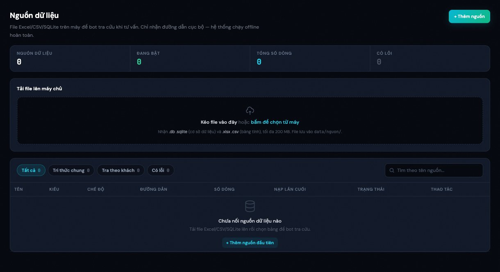
- 1+ Thêm nguồn
Khai một nguồn dữ liệu mới: kiểu file, chế độ dùng, đường dẫn.
Điều kiện Nhận
.db.sqlitevà bảng tính.xlsx.csv, tối đa 200 MB.Vì sao Trước đây trang này chỉ có ô gõ đường dẫn: người dùng phải tự copy file vào máy chủ, tự biết đường tuyệt đối, tự biết tên bảng bên trong. Giờ tải lên rồi chọn bảng từ danh sách dò được.
- 2Dải số nguồn dữ liệu
Số nguồn theo từng nhóm và số nguồn đang lỗi.
Điều kiện Đếm trên toàn bộ nguồn đã khai.
Vì sao Nguồn lỗi là lỗi im lặng: bot vẫn trả lời, chỉ là thiếu mất phần tra cứu.
- 3Vùng kéo-thả file
Kéo file vào hoặc bấm để chọn. File lưu vào
data/nguon/.Điều kiện Hiện tên và dung lượng file đã chọn rồi mới cho bấm tải lên.
Vì sao Ô chọn file gốc của trình duyệt hiện chuỗi hệ thống không sửa được và không nhận kéo-thả; và hiện tên file trước khi tải để bạn kịp thấy mình chọn nhầm.
- 4Lọc theo nhóm nguồn
Tất cả · Tri thức chung · Tra theo khách · Có lỗi.
Điều kiện Số bên cạnh mỗi nhóm là số nguồn thuộc nhóm đó.
Vì sao “Tra theo khách” là nhóm quan trọng nhất — đó là nguồn khiến bot nói được con số riêng của từng người.
- 5Tìm theo tên nguồn
Lọc nhanh khi có nhiều nguồn.
Điều kiện Tìm trong tên nguồn.
Vì sao Danh sách nguồn phình ra nhanh khi mỗi sản phẩm một bảng.
- 6Bảng nguồn
Tên · kiểu · chế độ · đường dẫn · số dòng · nạp lần cuối · trạng thái · thao tác.
Điều kiện Cột “số dòng” và “nạp lần cuối” là bằng chứng file đã thật sự vào máy.
Vì sao Khai đường dẫn xong mà số dòng vẫn trống nghĩa là máy chưa đọc được file — bắt lỗi ở đây rẻ hơn phát hiện khi khách đã nghe sai.
Cấu hình
Tri thức AI
Đây là thứ AI đọc để tư vấn. Mọi con số bot nói cho khách — lãi suất, hạn mức, điều kiện — đều lấy từ đây.
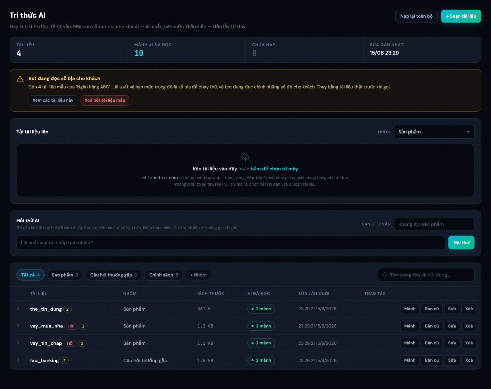
- 1Nạp lại toàn bộ
Cắt mảnh và đánh chỉ mục lại tất cả tài liệu.
Điều kiện Dùng sau khi sửa nhiều file cùng lúc, hoặc khi cột “AI đã đọc” trông không khớp.
Vì sao Nạp lại toàn bộ tốn thời gian nên không chạy tự động; sửa một tài liệu thì hệ thống chỉ nạp lại tài liệu đó.
- 2+ Soạn tài liệu
Mở khung soạn tài liệu ngay trong app, có mẫu cấu trúc và bộ soi lỗi.
Điều kiện Đây là đường duy nhất cho nội dung PDF — mở PDF ra, chọn hết, dán vào đây.
Vì sao Hệ thống không đọc PDF. Thay vì cài thêm thư viện đọc PDF, chọn cách chép tay vào ô soạn để nội dung luôn qua bộ soi lỗi.
- 3Dải bốn ô số
Số tài liệu · số mảnh AI đã đọc · số tài liệu chưa nạp · lần sửa gần nhất.
Điều kiện Ô “chưa nạp” khác 0 nghĩa là có tài liệu AI chưa nhìn thấy.
Vì sao Trước đây phải dò từng dòng trong bảng mới biết còn tài liệu nào chưa nạp; giờ mở trang là thấy ngay.
- 4Cảnh báo dữ liệu mẫu
Báo rằng bot đang đọc số bịa cho khách, kèm hai nút: xem các tài liệu đó, hoặc xoá hết tài liệu mẫu.
Điều kiện Chỉ hiện khi vẫn còn tài liệu mẫu chưa thay bằng số thật.
Vì sao Trước đây chỉ là dải chữ: nói ra vấn đề mà không cho lối xử lý. Giờ kèm hai nút để làm luôn.
- 5Chọn nhóm khi tải lên
Sản phẩm · Câu hỏi thường gặp · Chính sách / điều kiện.
Điều kiện Chọn trước khi thả file; nhóm gán cho file sắp tải.
Vì sao Nhóm quyết định lưới lọc lúc tra: hỏi lãi tiết kiệm mà tài liệu bị gán nhầm nhóm thì bot có thể đọc lãi vay tín chấp.
- 6Vùng thả tài liệu
Nhận
.md.txt.docxvà bảng tính.csv.xlsx.Điều kiện Bảng trong Word và Excel được giữ nguyên dạng bảng, không phải gõ lại tay.
Vì sao Bảng lãi suất là thứ hay bị mất cấu trúc nhất khi chép tay; giữ nguyên dạng bảng để AI đọc đúng cột nào là kỳ hạn, cột nào là lãi.
- 7Hỏi thử AI
Gõ câu khách hay hỏi để xem AI lấy được mảnh nào, từ tài liệu nào, khớp bao nhiêu. Ô bên phải giới hạn theo sản phẩm đang tư vấn.
Điều kiện Chỉ tra tài liệu — không gọi cho ai.
Vì sao Trước đây muốn biết AI có lấy đúng tài liệu không thì phải mở tab Hội thoại gọi hẳn một lượt, nên hầu như không ai thử — và tài liệu sai chỉ lộ ra khi khách đã nghe nhầm số. Gõ được cả sản phẩm chưa có tài liệu là cố ý: đó là ca mà lưới lọc phải bỏ hết mảnh của sản phẩm khác.
- 8Lọc theo nhóm + tạo nhóm mới
Tất cả · Sản phẩm · Câu hỏi thường gặp · Chính sách, kèm nút “+ Nhóm”.
Điều kiện Số bên cạnh là số tài liệu trong nhóm.
Vì sao Tự đặt được nhóm vì mỗi ngân hàng chia loại tài liệu một kiểu.
- 9Tìm trong tên và nội dung
Tìm cả trong tên tài liệu lẫn nội dung bên trong.
Điều kiện Tìm trong nội dung nên bắt được cả tài liệu đặt tên khó nhớ.
Vì sao Muốn sửa một con số lãi suất thì nhớ con số dễ hơn nhớ file nào chứa nó.
- 10Bảng tài liệu và bốn nút thao tác
Mỗi dòng: tên tài liệu, nhóm, kích thước, AI đã đọc mấy mảnh, sửa lần cuối. Bốn nút: Mảnh · Bản cũ · Sửa · Xoá. Huy hiệu đỏ “1 lỗi” là bộ soi báo tài liệu có vấn đề.
Điều kiện Cột “AI đã đọc” trống nghĩa là tài liệu chưa được nạp — AI chưa nhìn thấy nó.
Vì sao Nút Mảnh đọc từ kho vector chứ không cắt lại từ file trên đĩa: cắt lại thì luôn ra kết quả đẹp kể cả khi kho còn giữ bản cũ. Nút Bản cũ tồn tại vì đây là chỗ duy nhất quyết định con số bot đọc cho khách, ghi đè mà mất bản cũ là mất đường lùi.
Cấu hình
Câu đệm
Câu AI nói ngay khi khách vừa dứt lời, phát song song trong lúc máy còn đang nghĩ câu trả lời. Không có nó thì khách nghe một quãng im.
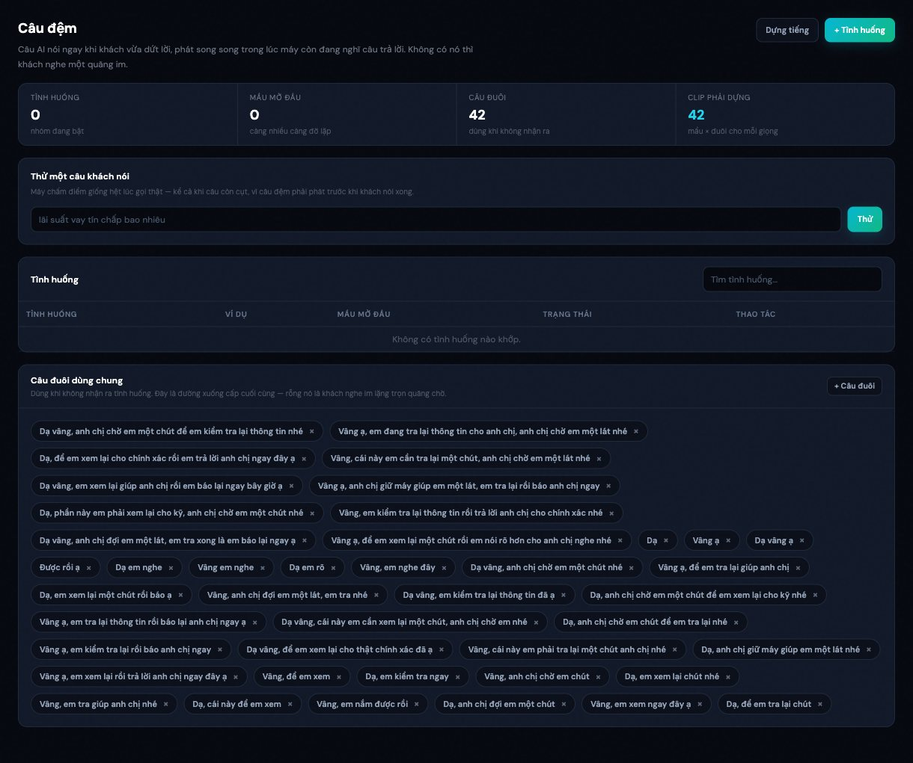
- 1Dựng tiếng
Sinh sẵn file tiếng cho toàn bộ câu đệm, để lúc gọi thật không phải đọc từ đầu.
Điều kiện Số clip phải dựng = mẫu mở đầu × câu đuôi, cho mỗi giọng. Đổi giọng là phải dựng lại.
Vì sao Câu đệm phải phát ngay lập tức; đọc tại chỗ thì đã mất đúng cái quãng im mà nó sinh ra để lấp.
- 2+ Tình huống
Thêm một tình huống: câu ví dụ khách hay nói, và mẩu mở đầu tương ứng.
Điều kiện Ảnh chụp đang có 0 tình huống.
Vì sao Càng nhiều mẫu mở đầu thì càng đỡ lặp — dải số ghi thẳng điều đó dưới ô “MẪU MỞ ĐẦU”.
- 3Dải bốn ô số
Tình huống đang bật · mẫu mở đầu · câu đuôi · số clip phải dựng.
Điều kiện “Clip phải dựng” là tích của mẫu mở đầu và câu đuôi cho mỗi giọng.
Vì sao Con số này cho biết trước bấm “Dựng tiếng” sẽ mất bao lâu — nó tăng theo cấp số nhân chứ không cộng dồn.
- 4Thử một câu khách nói
Gõ câu khách nói để xem máy nhận ra tình huống nào.
Điều kiện Máy chấm điểm giống hệt lúc gọi thật — kể cả khi câu còn cụt.
Vì sao Câu đệm phải phát trước khi khách nói xong, nên máy chỉ có phiên âm cụt để chấm. Một tình huống nghe rất hợp lý vẫn có thể không bao giờ đạt ngưỡng — chỉ thử ở đây mới biết.
- 5Bảng tình huống
Tình huống · ví dụ · mẫu mở đầu · trạng thái · thao tác.
Điều kiện Ảnh chụp rỗng vì chưa cấu hình tình huống nào.
Vì sao Tình huống là lớp làm câu đệm nghe khớp ngữ cảnh; không có nó thì mọi lượt đều rơi xuống câu đuôi chung.
- 6Câu đuôi dùng chung
Kho câu dùng khi không nhận ra tình huống. Ảnh chụp có 42 câu; nút “×” xoá từng câu.
Điều kiện Đây là đường xuống cấp cuối cùng.
Vì sao Rỗng nó là khách nghe im lặng trọn quãng chờ — đúng thứ mà cả trang này sinh ra để tránh. Kho câu phải rải liền mạch nhiều độ dài, không chỉ đủ số lượng.
Cấu hình
Giọng nói
Nạp giọng mẫu và nghe thử. Một giọng gồm file WAV mẫu và transcript đúng nội dung đọc trong file đó.
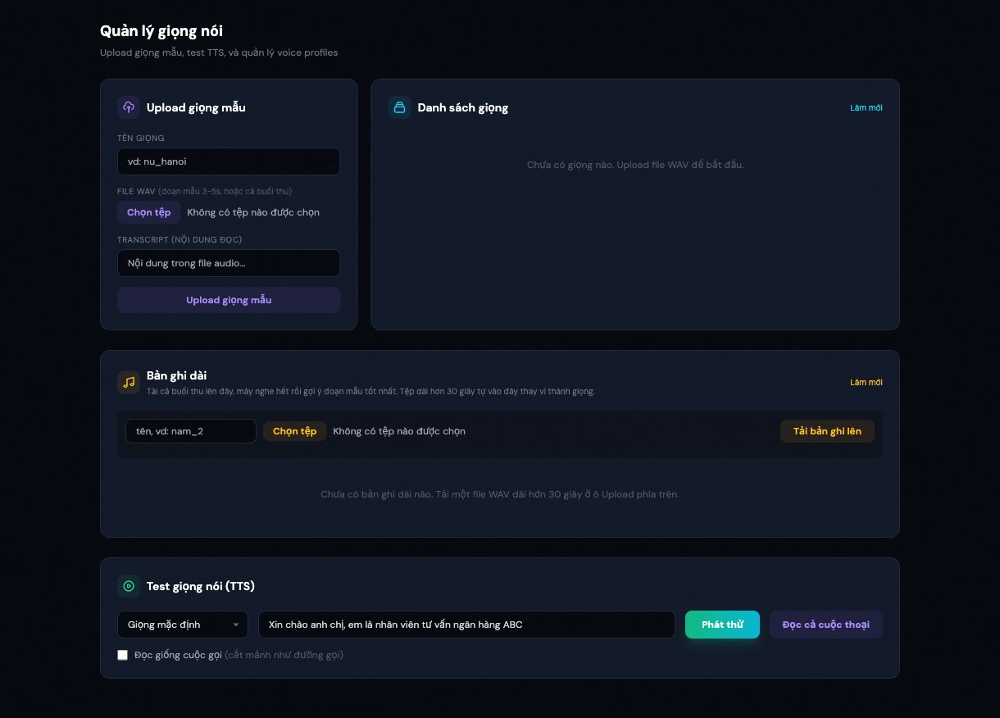
- 1Khung nạp giọng mẫu
Ba ô: tên giọng · file WAV · transcript (nội dung đọc trong file).
Điều kiện Đoạn mẫu 3–5 giây là đủ. Tệp dài hơn 30 giây tự rơi xuống mục Bản ghi dài thay vì thành giọng.
Vì sao Transcript sai thì giọng đọc sai: máy tin transcript bạn khai là nội dung thật của file mẫu, khai lệch một chữ là giọng sinh ra mang đúng chữ sai đó vào mọi câu.
- 2Danh sách giọng
Các giọng đã nạp, kèm nút Làm mới.
Điều kiện Rỗng khi chưa nạp giọng nào, hoặc khi máy chưa có mô hình đọc tiếng.
Vì sao Danh sách này là nguồn cho mọi ô chọn giọng ở các trang khác.
- 3Bản ghi dài — tải lên
Tải cả buổi thu lên, máy nghe hết rồi gợi ý đoạn mẫu tốt nhất.
Điều kiện Đường riêng, không gộp với ô nạp giọng phía trên.
Vì sao Mô hình chép giọng từ một đoạn mẫu ngắn, nên chọn đoạn nào quyết định chất lượng ngang với model. Chọn tay mất khoảng hai giờ mỗi giọng và rất dễ sai theo kiểu khó truy — có lần đoạn mẫu đang dùng không có lấy một chữ “ạ” nào trong 20 phút bản ghi, nên máy phải tự bịa ngữ điệu cho tiểu từ và bên A nghe ra ngay. Nút tải đặt ngay đây vì dòng chỉ dẫn trỏ lên ô trên đã được chứng minh là không ăn.
- 4Danh sách bản ghi dài
Các bản thu dài đã tải, và đoạn mẫu máy gợi ý từ mỗi bản.
Điều kiện Rỗng cho tới khi tải một file WAV dài hơn 30 giây.
Vì sao Giữ cả bản gốc để chọn lại đoạn khác khi đoạn đang dùng cho ra giọng chưa ưng.
- 5Test giọng nói (TTS)
Chọn giọng · gõ câu · Phát thử đọc một câu, Đọc cả cuộc thoại đọc liền mạch nhiều lượt.
Điều kiện Cần mô hình đọc tiếng đang chạy.
Vì sao Nghe một câu rời không nói lên được thứ khách thật sự nghe: lỗi hay gặp nằm giữa các lượt — tông lạc quẻ giữa mảnh, “ạ” chưa ngắt xong đã đọc từ sau, tiếng lúc to lúc bé. Phải nghe liền mạch mới bắt được.
- 6Đọc giống cuộc gọi (cắt mảnh như đường gọi)
Bật để máy cắt câu thành mảnh y như lúc gọi thật, thay vì đọc liền một hơi.
Điều kiện Số mảnh thật hiện ở dòng kết quả bên dưới sau khi phát.
Vì sao Nhãn cố ý không ghi cứng luật cắt vì luật đổi nhiều lần — từ 5 từ lên 16, rồi tăng dần 5/10/20, rồi theo nguyên câu — và nhãn cũ hoá sai lặng lẽ.
Cấu hình
Thiết bị
Điện thoại / gateway / modem mà hệ thống dùng để gọi ra và nhận cuộc gọi vào — và tốc độ đọc riêng cho đường điện thoại.
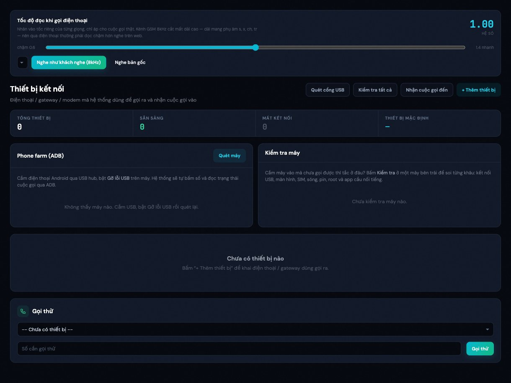
- 1Thanh tốc độ đọc khi gọi điện thoại
Hệ số nhân thêm vào tốc riêng của từng giọng, từ 0.6 (chậm) tới 1.4 (nhanh). Ảnh chụp đang để 1.00.
Điều kiện Chỉ áp cho cuộc gọi thật, không ảnh hưởng lúc nghe thử trên web.
Vì sao Kênh GSM 8kHz cắt sạch dải trên 4kHz — đúng dải mang phụ âm s, x, ch, tr — nên tốc nghe rõ trên web chưa chắc rõ qua điện thoại. Tách riêng khỏi tốc từng giọng vì đây là đặc tính của đường truyền.
- 2Chọn giọng để nghe thử
Chọn giọng dùng cho hai nút nghe bên cạnh.
Điều kiện Danh sách lấy từ trang Giọng nói.
Vì sao Mỗi giọng chịu ảnh hưởng của băng hẹp một kiểu; phải nghe đúng giọng sắp dùng.
- 3Nghe như khách nghe (8kHz)
Phát bản đã bóp xuống băng hẹp, giống hệt thứ đi qua đường điện thoại.
Điều kiện Dùng để chốt tốc độ trước khi chạy chiến dịch.
Vì sao Đây là nút quan trọng nhất của khối: nghe bản gốc rồi chốt tốc là chốt nhầm, vì lỗi phụ âm chỉ lộ ra sau khi bóp băng.
- 4Nghe bản gốc
Phát bản chất lượng đầy đủ để so sánh.
Điều kiện Dùng kèm nút bên trái, không dùng một mình.
Vì sao Có cặp đối chứng thì mới nghe ra băng hẹp lấy mất những gì.
- 5Quét cổng USB
Tìm thiết bị đang cắm vào cổng USB.
Điều kiện Máy phải cắm sẵn trước khi quét.
Vì sao Quét theo yêu cầu chứ không liên tục để không đụng vào máy đang giữa cuộc gọi.
- 6Kiểm tra tất cả
Chạy bộ kiểm cho mọi máy đã khai.
Điều kiện Kết quả đổ vào khối “Kiểm tra máy” bên dưới.
Vì sao Trước một đợt gọi lớn, kiểm cả dàn một lượt rẻ hơn phát hiện máy hỏng giữa chiến dịch.
- 7Nhận cuộc gọi đến
Bật chế độ máy tự trả lời cuộc gọi vào.
Điều kiện Cần khai kịch bản dùng cho cuộc gọi vào.
Vì sao Gọi vào và gọi ra là hai luồng khác nhau; tách công tắc để không vô tình bật cả hai.
- 8+ Thêm thiết bị
Khai một điện thoại / gateway dùng để gọi ra.
Điều kiện Là điều kiện để trang Danh bạ gọi bấm gọi được.
Vì sao Danh bạ chỉ giữ số; không có thiết bị thì không có gì quay số.
- 9Dải số thiết bị
Tổng thiết bị · sẵn sàng · mất kết nối · thiết bị mặc định.
Điều kiện “Mất kết nối” khác 0 là có máy rụng.
Vì sao Máy rụng giữa chiến dịch là lỗi im lặng — chiến dịch vẫn báo đang chạy nhưng không cuộc nào ra.
- 10Phone farm (ADB)
Điều khiển điện thoại Android qua cáp USB: hệ thống tự bấm số và đọc trạng thái cuộc gọi.
Điều kiện Phải cắm qua USB hub và bật Gỡ lỗi USB trên máy đó.
Vì sao Dùng máy Android thật thay vì gateway vì đây là đường có sẵn SIM và loa mic thật, không phải mô phỏng.
- 11Kiểm tra máy
Soi từng khâu của một máy: kết nối USB · màn hình · SIM · sóng · pin · quyền root · app cầu nối tiếng.
Điều kiện Bấm “Kiểm tra” ở một máy bên trái mới có kết quả ở đây.
Vì sao “Không ai bắt máy” thường không phải lỗi phần mềm: SIM hết tiền, màn hình đang khoá, và hộp thoại chọn SIM đều cho ra đúng triệu chứng đó. Bộ kiểm tách từng khâu để không đoán mò.
- 12Danh sách thiết bị
Các máy đã khai và trạng thái từng máy.
Điều kiện Rỗng cho tới khi bấm “+ Thêm thiết bị”.
Vì sao Khai tường minh thay vì tự nhận, để biết máy nào được phép gọi.
- 13Gọi thử
Chọn máy, nhập một số, bấm gọi để kiểm tra cả đường từ đầu tới cuối.
Điều kiện Cần ít nhất một thiết bị sẵn sàng.
Vì sao Gọi thử một số của chính mình là cách duy nhất xác nhận tiếng đi tới được tai người, không chỉ tới được máy.
Cấu hình
Cài đặt
Cấu hình chung: bot xưng tên gì, dùng mô hình nào, có ghi âm không, và tình trạng bốn dịch vụ lõi.
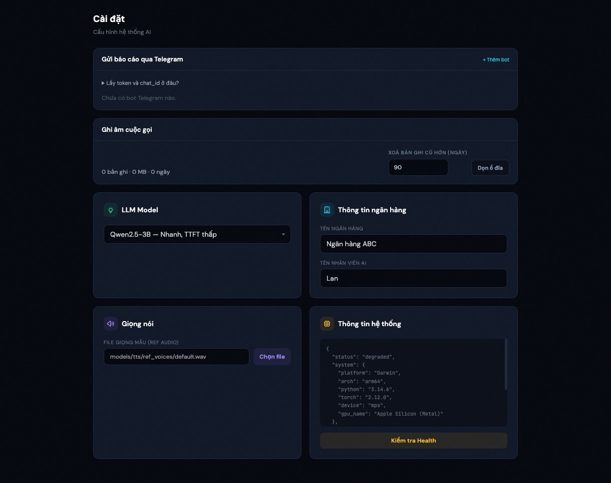
- 1Gửi báo cáo qua Telegram
Thêm bot Telegram để nhận báo cáo. Dòng “Lấy token và chat_id ở đâu?” mở hướng dẫn tại chỗ.
Điều kiện Rỗng khi chưa thêm bot nào.
Vì sao Có hướng dẫn gấp sẵn ngay trong app vì lấy token là bước hay tắc nhất, và mở tài liệu ngoài thì mất mạch.
- 2Ghi âm cuộc gọi + dọn ổ đĩa
Số bản ghi, dung lượng, số ngày lưu; ô nhập số ngày và nút “Dọn ổ đĩa” xoá bản ghi cũ hơn mốc đó.
Điều kiện Ảnh chụp: 0 bản ghi · 0 MB · 0 ngày. Mặc định giữ 90 ngày.
Vì sao Ghi âm cuộc gọi phình rất nhanh; có nút dọn ngay cạnh con số dung lượng để thấy vấn đề là xử lý được luôn.
- 3LLM Model
Chọn mô hình sinh câu trả lời: Qwen2.5-3B (nhanh, tới tiếng đầu sớm) · Qwen2.5-7B (chất lượng cao) · Qwen3-4B (chế độ suy luận).
Điều kiện Mô hình phải đã tải về ở trang Cài Model mới chọn được.
Vì sao Đánh đổi thẳng giữa tốc và chất: bản nhỏ trả lời nhanh hơn nên khách ít phải chờ, bản lớn trả lời đúng hơn nhưng kéo dài quãng im.
- 4Thông tin ngân hàng
Tên ngân hàng và tên nhân viên AI mà bot tự xưng.
Điều kiện Sửa ở đây chưa chắc đủ. Kịch bản đang chọn có thể ghi đè, và câu chào mở đầu có thể ghi cứng tên.
Vì sao Đây là ô cấu hình gốc, nhưng kịch bản nằm ở lớp trên nên thắng. Đổi xong nên sang trang Nhắn tin gõ một câu để nghe bot tự giới thiệu lại.
- 5Giọng nói — file giọng mẫu
Đường dẫn file WAV làm giọng mặc định của hệ thống.
Điều kiện Ảnh chụp đang trỏ
models/tts/ref_voices/default.wav.Vì sao Giọng mặc định lấy nội dung đoạn mẫu từ cấu hình chứ không từ file
.txtđi kèm như các giọng khác — nên lệch lời ở đây là bot đọc ra chính chữ sai đó. - 6Thông tin hệ thống + Kiểm tra Health
Khối JSON cho biết nền tảng, thiết bị tính toán, và tình trạng bốn dịch vụ:
stt·llm·tts·rag.Điều kiện Đây là chỗ cần nhìn đầu tiên khi có gì đó không chạy. Trạng thái chốt lúc khởi động, nên bật một dịch vụ xong phải bấm nút này.
Vì sao Bốn dịch vụ hỏng cho ra bốn triệu chứng rất giống nhau ở phía người dùng; đọc thẳng trạng thái nhanh hơn đoán từ triệu chứng.
Hệ thống
Phiên gọi
Lịch sử cuộc gọi ở mức chi tiết hơn trang Báo cáo: nội dung hội thoại từng lượt và độ trễ từng lượt.
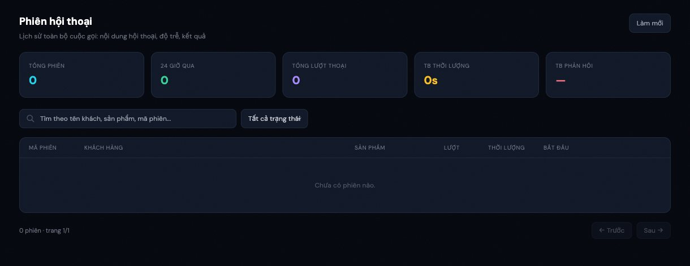
- 1Dải số phiên
Số liệu tổng hợp của các phiên.
Điều kiện Đổi theo bộ lọc bên dưới.
Vì sao Cho biết ngay tập dữ liệu đang soi lớn cỡ nào.
- 2Tìm phiên
Tìm theo tên khách, sản phẩm, hoặc mã phiên.
Điều kiện Mã phiên lấy từ khối “Phiên làm việc” ở trang Hội thoại.
Vì sao Vừa thử xong một buổi, cầm mã phiên sang đây là mở đúng phiên đó, không phải dò theo giờ.
- 3Lọc trạng thái
Tất cả · Đang diễn ra · Đã kết thúc.
Điều kiện “Đang diễn ra” hữu ích khi chiến dịch đang chạy.
Vì sao Tách phiên đang chạy ra để theo dõi thời gian thực mà không lẫn với lịch sử.
- 4Bảng phiên
Mã phiên · khách hàng · sản phẩm · số lượt · thời lượng · bắt đầu lúc nào. Bấm vào một dòng để mở nội dung hội thoại đầy đủ.
Điều kiện Rỗng khi chưa có phiên nào.
Vì sao Số lượt và thời lượng đặt cạnh nhau để nhận ra phiên bất thường: nhiều lượt mà ngắn thường là máy nghe nhầm liên tục.
Hệ thống
Test giọng
Nghe thử, chạy cả bộ câu khó, và so sánh hai giọng cạnh nhau trước khi chốt.
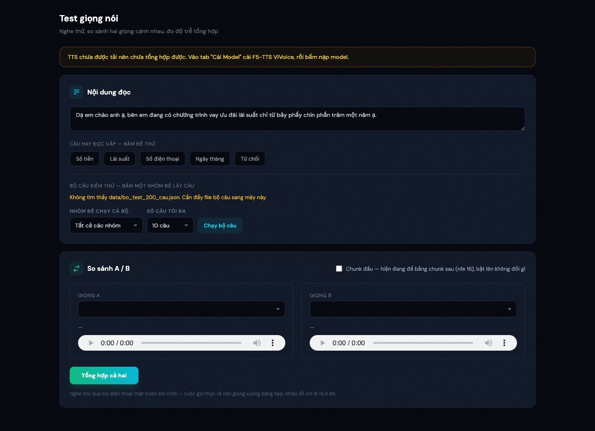
- 1Nội dung đọc
Câu sẽ đem đi tổng hợp. Ảnh chụp đang để sẵn một câu chào chương trình.
Điều kiện Bị các nút bên dưới ghi đè khi bạn bấm chọn nhóm câu.
Vì sao Để gõ câu riêng khi cần thử đúng một chỗ vừa sửa.
- 2Câu hay đọc vấp — năm nhóm
Số tiền · Lãi suất · Số điện thoại · Ngày tháng · Từ chối. Bấm một nhóm là điền câu vào ô trên.
Điều kiện Bấm để lấy câu, chưa phát.
Vì sao Năm nhóm này là chỗ máy đọc sai nhiều nhất — con số và ngày tháng đọc sai là khách nghe ra ngay, còn câu thường thì hiếm khi lộ lỗi.
- 3Chạy cả bộ câu
Chọn nhóm và số câu tối đa (10 · 25 · 50 · cả bộ) rồi bấm chạy hàng loạt.
Điều kiện Bộ câu lấy từ kho câu kiểm thử có sẵn trong hệ thống.
Vì sao Nghe vài câu lẻ dễ ra kết luận sai; chạy cả bộ mới thấy lỗi nào lặp lại có hệ thống.
- 4Ô tick “chunk đầu”
Điều khiển số bước khử nhiễu cho mảnh đầu tiên.
Điều kiện Nhãn ghi rõ: hiện đang để bằng chunk sau, bật lên không đổi gì.
Vì sao Giữ lại ô này và ghi thẳng ra là nó đang vô hiệu, thay vì gỡ đi hoặc để người dùng tưởng nó có tác dụng.
- 5So sánh A / B
Chọn hai giọng để tổng hợp cùng một câu, nghe cạnh nhau.
Điều kiện Cần ít nhất hai giọng trong danh sách.
Vì sao Nghe lần lượt hai giọng cách nhau vài phút thì trí nhớ không giữ đủ chi tiết; đặt cạnh nhau mới so được.
- 6Tổng hợp cả hai
Chạy tổng hợp cho cả giọng A và B.
Điều kiện Kết quả kèm số đo độ trễ của từng giọng.
Vì sao Một giọng hay hơn nhưng chậm hơn là đánh đổi thật; phải thấy cả hai con số mới chốt được.
Hệ thống
Training giọng
Nhân bản giọng một người thật qua bốn bước: chọn tên → thu 60 câu → chuẩn hoá → luyện mô hình.
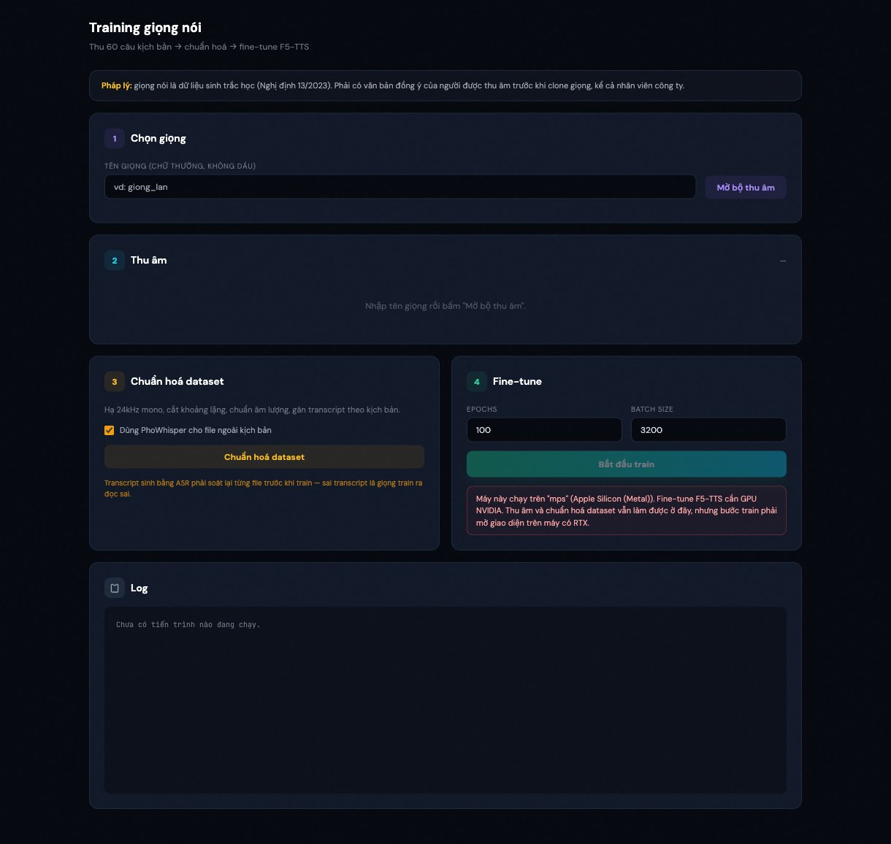
- 1Bước 1 — tên giọng
Đặt tên giọng bằng chữ thường không dấu, rồi bấm “Mở bộ thu âm”.
Điều kiện Chưa nhập tên thì bộ thu âm không mở.
Vì sao Tên giọng thành tên thư mục chứa dữ liệu thu; ràng buộc chữ thường không dấu để tránh lỗi đường dẫn.
- 2Bước 2 — thu âm
Bộ thu 60 câu kịch bản: đọc từng câu, nghe lại, thu lại nếu chưa ưng.
Điều kiện Rỗng cho tới khi nhập tên và bấm mở ở bước 1.
Vì sao Đọc theo kịch bản cố định để transcript có sẵn và chắc chắn đúng — không phải nhờ máy phiên âm rồi soát lại.
- 3Bước 3 — chuẩn hoá dataset
Hạ về 24kHz mono, cắt khoảng lặng, chuẩn âm lượng, gán transcript theo kịch bản. Ô tick bật phiên âm bằng máy cho file ngoài kịch bản.
Điều kiện Bật ô tick khi có file thu không theo 60 câu mẫu.
Vì sao Transcript sinh bằng máy phải soát lại từng file: sai transcript là giọng luyện ra đọc sai, và lỗi đó nằm luôn trong mô hình chứ không sửa được bằng cấu hình.
- 4Bước 4 — luyện mô hình
Đặt số vòng lặp và kích thước lô, rồi bấm bắt đầu.
Điều kiện Cần card đồ hoạ; trang sẽ cảnh báo nếu máy không đủ.
Vì sao Để lộ hai tham số này thay vì giấu đi, vì đây là hai nút xoay duy nhất khi giọng luyện ra chưa đạt.
- 5Khối tiến độ và log
Phần trăm, thời gian còn lại, vòng lặp hiện tại, và log chi tiết.
Điều kiện Rỗng khi chưa có tiến trình nào đang chạy.
Vì sao Trước đây trang này không có gì ngoài log thô: thanh vẽ vỡ font, tiếng Anh, và thời gian còn lại chỉ tính cho vòng lặp hiện tại — báo “còn 2 phút” trong khi cả buổi còn gần 3 tiếng.
Hệ thống
Training LLM
Dạy mô hình trả lời theo cách của bạn, bằng dữ liệu tư vấn của chính bạn.
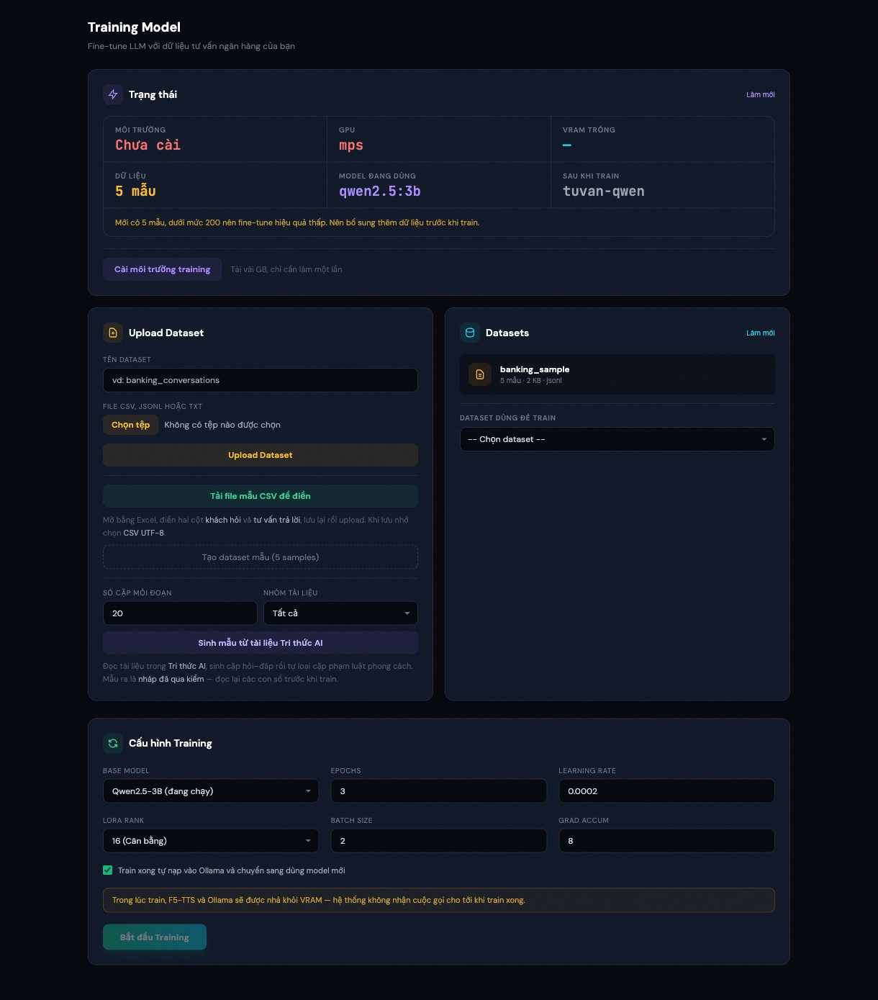
- 1Trạng thái môi trường
Cho biết máy đã đủ điều kiện luyện mô hình chưa.
Điều kiện Bấm “Làm mới” để đọc lại.
Vì sao Luyện mô hình đòi nhiều thư viện nặng; kiểm trước để không chạy nửa chừng mới đứt.
- 2Cài môi trường training
Tải và cài các thư viện cần cho việc luyện.
Điều kiện Tải vài GB, chỉ cần làm một lần.
Vì sao Tách khỏi phần cài đặt chung vì phần lớn người dùng không bao giờ luyện mô hình, không nên bắt họ tải vài GB thừa.
- 3Tải dataset lên
Đặt tên rồi tải file CSV, JSONL hoặc TXT.
Điều kiện Khi lưu từ Excel nhớ chọn CSV UTF-8, không thì tiếng Việt vỡ.
Vì sao Có nút tải file mẫu ngay bên dưới để không phải đoán định dạng — và các dòng mẫu đều đã đạt luật phong cách nên nhìn là biết viết sao.
- 4Sinh mẫu từ tài liệu Tri thức AI
Máy đọc tài liệu trong Tri thức AI, sinh cặp hỏi–đáp, rồi tự loại cặp phạm luật phong cách. Chọn được số cặp mỗi đoạn và nhóm tài liệu.
Điều kiện Kết quả là bản nháp — phải đọc lại các con số trước khi đem luyện.
Vì sao Luyện mô hình đòi tối thiểu khoảng 200 mẫu, mà soạn tay 200 cặp đúng luật phong cách là việc không ai làm nổi — trong khi kho tri thức đã có sẵn nội dung, và chính nó là thứ AI đọc lúc tư vấn thật.
- 5Danh sách dataset
Các bộ dữ liệu đã có, kèm số mẫu và dung lượng. Nút “Kiểm tra” soi thử một bộ.
Điều kiện Ảnh chụp có sẵn
banking_sample5 mẫu.Vì sao Bộ mẫu 5 dòng để chạy thử cả đường ống mà không tốn hàng giờ luyện thật.
- 6Chọn dataset để luyện
Chỉ định bộ dữ liệu đem đi luyện.
Điều kiện Phải chọn thì nút bắt đầu mới chạy.
Vì sao Tách khỏi danh sách bên trên vì có dataset chỉ để tham khảo, không phải để luyện.
- 7Cấu hình luyện
Mô hình gốc · số vòng lặp · tốc học · độ chi tiết LoRA (8 nhẹ → 64 nặng) · kích thước lô · gộp gradient.
Điều kiện Mô hình gốc phải đã tải về ở trang Cài Model.
Vì sao LoRA rank là nút đánh đổi chính: rank thấp học ít, giữ được văn phong gốc; rank cao học kỹ hơn nhưng dễ làm mô hình trả lời rập một khuôn.
- 8Tự nạp vào Ollama sau khi luyện xong
Bật để luyện xong tự chuyển sang dùng mô hình mới.
Điều kiện Tắt thì mô hình mới nằm chờ, hệ thống vẫn dùng bản cũ.
Vì sao Cho tắt được để nghe thử mô hình mới trước khi cho nó tiếp khách thật.
- 9Bắt đầu Training
Khởi động buổi luyện.
Điều kiện Trong lúc luyện, hệ thống không nhận cuộc gọi — bộ đọc tiếng và mô hình ngôn ngữ đều bị nhả khỏi bộ nhớ card đồ hoạ.
Vì sao Card đồ hoạ không đủ chỗ cho cả luyện lẫn phục vụ cuộc gọi; nhả tường minh còn hơn để cả hai cùng chậm rồi hỏng.
Hệ thống
Cài Model
Tải các mô hình AI về máy. Mỗi mô hình chạy độc lập — cài cái nào dùng cái đó.
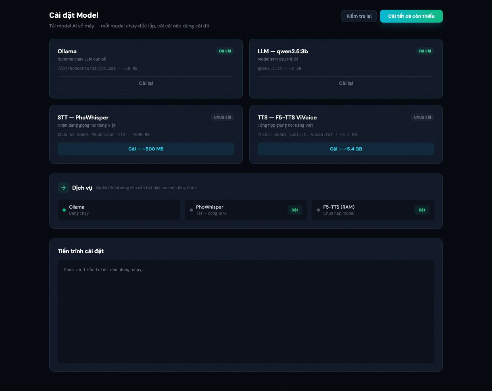
- 1Cài tất cả còn thiếu
Tải một lượt mọi mô hình chưa có.
Điều kiện Tải vài GB, cần mạng.
Vì sao Lối đi một nút cho lần dựng đầu, thay vì bắt người dùng tự biết cần những mô hình nào.
- 2Danh sách mô hình
Từng mô hình với dung lượng và nút cài riêng. Ảnh chụp cho thấy hai mô hình đã có (nút “Cài lại”) và hai chưa có (“Cài — ~500 MB”, “Cài — ~5.4 GB”).
Điều kiện Nút đổi chữ theo tình trạng: chưa có thì hiện dung lượng, có rồi thì thành “Cài lại”.
Vì sao Ghi dung lượng ngay trên nút để biết trước sẽ tải bao nhiêu, không bấm rồi mới biết là 5.4 GB.
- 3Dịch vụ
Bật / tắt từng dịch vụ. Ảnh chụp có hai nút “Bật”.
Điều kiện Mô hình đã tải xong vẫn cần bật dịch vụ mới dùng được — dòng chữ này in ngay trong khối.
Vì sao Đây là chỗ bị bỏ sót nhiều nhất khi dựng máy mới: tải xong tưởng là xong, nhưng trang Cài đặt vẫn báo dịch vụ không khả dụng.
- 4Tiến trình cài đặt
Log của việc tải và cài đang chạy.
Điều kiện Rỗng khi không có tiến trình nào.
Vì sao Tải vài GB mà không có gì hiện ra thì không phân biệt được “đang tải” với “đã treo”.
Hệ thống
Benchmark
Đo tốc từng khâu riêng lẻ, và đo cả chuỗi từ đầu tới cuối.
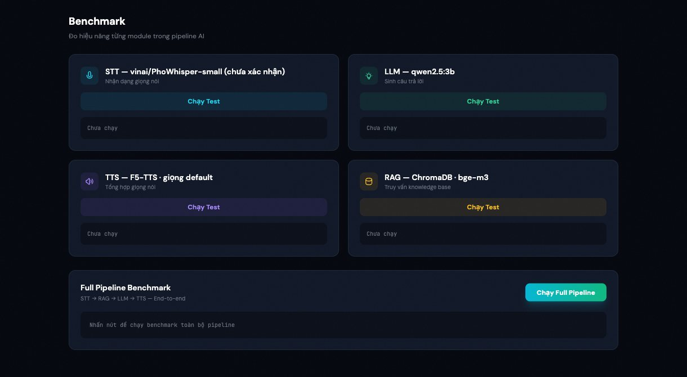
- 1STT — nhận dạng giọng nói
Đo thời gian chuyển tiếng thành chữ.
Điều kiện Cần dịch vụ nghe đang bật.
Vì sao Khâu này phụ thuộc chất lượng tiếng vào; chậm bất thường thường là do file thử chứ không phải do máy.
- 2LLM — sinh câu trả lời
Đo thời gian mô hình nghĩ ra câu.
Điều kiện Cần mô hình ngôn ngữ đang chạy.
Vì sao Đây là khâu đổi nhiều nhất khi bạn đổi mô hình ở trang Cài đặt — đo trước và sau khi đổi để biết đánh đổi đáng không.
- 3TTS — tổng hợp giọng nói
Đo thời gian đọc chữ thành tiếng.
Điều kiện Cần mô hình đọc tiếng đã nạp.
Vì sao Số đo ở đây dễ bị bộ nhớ đệm làm sai: chạy lại đúng một câu có thể ra gần bằng 0 vì máy trả lại kết quả cũ.
- 4RAG — truy vấn kho tri thức
Đo thời gian tra tài liệu.
Điều kiện Cần kho tri thức đã nạp mảnh.
Vì sao Thường là khâu nhanh nhất; nếu nó chậm thì gần như chắc chắn kho vector có vấn đề.
- 5Chạy Full Pipeline
Đo cả chuỗi nghe → tra → nghĩ → đọc, nối liền.
Điều kiện Cần cả bốn dịch vụ cùng chạy được.
Vì sao Tổng của bốn khâu riêng lẻ không bằng số đo cả chuỗi, vì còn phần chuyển tiếp giữa các khâu — chính chỗ đó hay là thủ phạm.
Hệ thống
Logs
Nhật ký thô của từng dịch vụ. Khi một trang khác báo lỗi mà không nói rõ lý do, ở đây thường có nguyên văn.
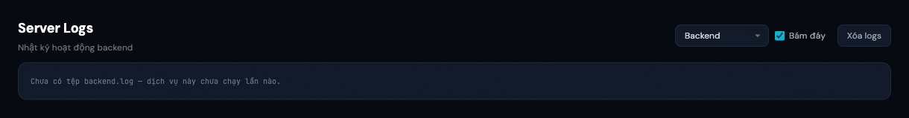
- 1Chọn nguồn log
Backend · PhoWhisper (nghe) · Ollama (nghĩ) · Training LLM · Training giọng.
Điều kiện Mỗi nguồn là một tiến trình riêng, log không trộn vào nhau.
Vì sao Trộn chung thì log của buổi luyện kéo dài mấy tiếng sẽ nhấn chìm log cuộc gọi.
- 2Bám đáy
Giữ khung nhìn luôn ở dòng mới nhất.
Điều kiện Tắt khi muốn cuộn lên đọc mà không bị kéo xuống.
Vì sao Log chạy nhanh; không có nút này thì vừa đọc được nửa dòng đã bị đẩy đi.
- 3Xóa logs
Xoá nội dung đang hiển thị.
Điều kiện Chỉ xoá phần đang xem trên màn hình.
Vì sao Dọn màn trước khi tái hiện một lỗi, để log mới không lẫn với log cũ.
- 4Khung log
Nội dung nhật ký của nguồn đang chọn.
Điều kiện Hiện “Đang chờ kết nối server…” khi chưa nối được.
Vì sao Trang này trước đây là vỏ rỗng — chỉ có nút xoá, không có nguồn dữ liệu nào và không có đầu nối, nên hiện dòng chờ mãi mãi. Giờ đã có đầu nối thật.
Màn hiện ra khi bấm
Mảnh — AI đang giữ gì cho tài liệu này
Mở bằng nút Mảnh ở trang Tri thức AI. Cho xem đúng thứ AI đang giữ trong kho, không phải nội dung file trên đĩa.
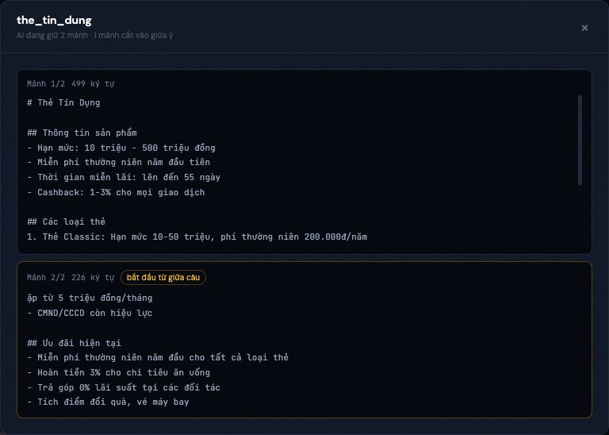
- 1Tên tài liệu
Tài liệu đang soi. Ảnh chụp là
the_tin_dung.Điều kiện Mở từ đúng dòng bạn bấm nút Mảnh.
Vì sao Một tài liệu ra nhiều mảnh; phải biết đang xem mảnh của tài liệu nào.
- 2“AI đang giữ 2 mảnh · 1 mảnh cắt vào giữa ý”
Số mảnh thật trong kho, và bao nhiêu mảnh bị cắt hỏng.
Điều kiện Đọc từ kho vector, không phải cắt lại từ file.
Vì sao Cắt lại từ file thì luôn ra kết quả đẹp, kể cả khi kho còn giữ bản cũ. Đọc thẳng từ kho mới biết AI thật sự đang cầm gì.
- 3Mảnh 1/2 — 499 ký tự
Một mảnh là một lát 500 ký tự của tài liệu. Mảnh này bắt đầu đúng đầu file nên có cả tiêu đề “# Thẻ Tín Dụng”.
Điều kiện Mảnh nào chứa tiêu đề thì AI biết số trong đó là của sản phẩm nào.
Vì sao Khi khách hỏi, hệ thống không đưa cả tài liệu cho AI đọc — nó tìm vài mảnh giống câu hỏi nhất rồi chỉ đưa mấy mảnh đó. Nên mảnh chính là đơn vị nhỏ nhất mà AI nhìn thấy.
- 4Mảnh 2/2 — 226 ký tự
Lát tiếp theo. Nó chồng lấn 50 ký tự với mảnh trước, nên mở đầu bằng đuôi của mảnh 1.
Điều kiện Chồng lấn là cố ý: câu bị cắt đôi thì ít nhất một trong hai mảnh còn giữ đủ ngữ cảnh.
Vì sao Không chồng lấn thì một ý nằm vắt qua hai mảnh sẽ mất hẳn ở cả hai. Chồng lấn 50 ký tự là giá phải trả để giảm rủi ro đó.
- 5Nhãn vàng “bắt đầu từ giữa câu”
Cảnh báo mảnh này mở đầu bằng nửa câu. Ảnh chụp: mảnh 2 bắt đầu bằng
ập từ 5 triệu đồng/tháng— chữ “nhập” bị chặt đôi.Điều kiện Máy gắn nhãn khi ký tự đầu mảnh là chữ thường hoặc chữ số, mà không phải số thứ tự danh sách.
Vì sao AI đọc mảnh này sẽ thấy “ập từ 5 triệu đồng/tháng” và không biết đó là thu nhập. Cách sửa: chèn tiêu đề con
##để chia tài liệu thành phần ngắn hơn, chỗ cắt sẽ rơi vào ranh giới sạch.
Màn hiện ra khi bấm
Soạn / sửa tài liệu + bộ soi
Mở bằng + Soạn tài liệu hoặc nút Sửa. Bên dưới ô nội dung là bộ soi — chạy lại mỗi khi bạn ngừng gõ, chưa cần lưu.
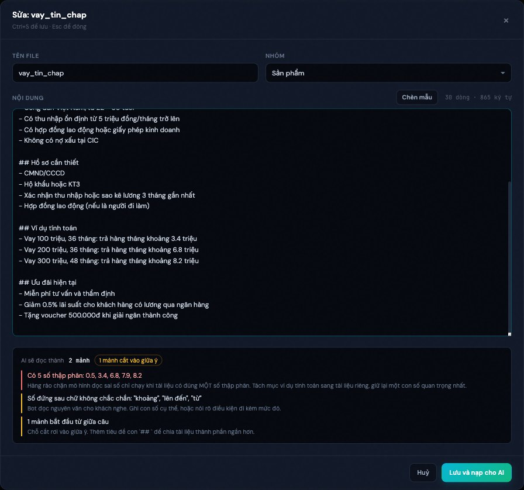
- 1Tên file
Tên tài liệu, cũng là tên file trên đĩa.
Điều kiện Với nhóm Sản phẩm, tên file phải khớp tiêu đề trong nội dung, nếu không bộ soi sẽ cảnh báo.
Vì sao Lưới lọc sản phẩm neo theo tên file, không đọc nội dung. Tên lệch là lọc không bao giờ ăn — và bot có thể đọc lãi suất sản phẩm khác cho khách.
- 2Nhóm
Sản phẩm · Câu hỏi thường gặp · Chính sách.
Điều kiện Đổi nhóm là đổi cả cách bộ soi chấm.
Vì sao Luật “tên file khớp tiêu đề” chỉ áp cho nhóm Sản phẩm, vì chỉ nhóm đó bị lưới lọc neo theo tên.
- 3Chèn mẫu
Chèn khung tài liệu mẫu đúng chuẩn cho nhóm đang chọn.
Điều kiện Ghi đè nội dung đang có.
Vì sao Mẫu này tự nó cũng phải sạch theo luật của bộ soi — mẫu vi phạm luật mình dạy thì người dùng chép về là mắc lỗi ngay. Mẫu sản phẩm cố ý chỉ mang một số thập phân, đúng điều kiện để hàng rào chặn số chạy được.
- 4Đếm dòng và ký tự
Ảnh chụp: 30 dòng · 865 ký tự.
Điều kiện Cập nhật khi gõ.
Vì sao 865 ký tự ÷ 500 = 2 mảnh. Con số này cho biết trước tài liệu sẽ bị cắt ra bao nhiêu phần.
- 5Ô nội dung
Nội dung tài liệu, viết bằng Markdown.
Điều kiện Ctrl+S để lưu, Esc để đóng.
Vì sao Dùng Markdown vì tiêu đề
#và##là công cụ duy nhất bạn có để điều khiển chỗ cắt mảnh. - 6“AI sẽ đọc thành 2 mảnh · 1 mảnh cắt vào giữa ý”
Cắt thử ngay lúc gõ, bằng đúng hàm mà RAG dùng khi nạp thật.
Điều kiện Cập nhật khi ngừng gõ, chưa cần lưu.
Vì sao Thấy trước hậu quả rồi sửa, thay vì lưu xong mới phát hiện. Và vì dùng chung một hàm cắt, con số ở đây không bao giờ lệch với thực tế.
- 7Ba phát hiện của bộ soi
Dòng đỏ là lỗi (làm bot nói sai số), dòng vàng là cảnh báo (làm AI đọc thiếu ngữ cảnh, vẫn dùng được). Mỗi dòng gồm vấn đề và cách sửa.
Điều kiện Ảnh chụp bắt được đúng ba lỗi thường gặp nhất — xem bảng giải thích ngay dưới mục này.
Vì sao Báo lỗi mà không nói sửa thế nào thì người dùng đứng im, nên mỗi phát hiện đều kèm một câu chỉ cách sửa.
- 8Lưu và nạp cho AI
Lưu file và cắt mảnh, đánh chỉ mục lại ngay.
Điều kiện Lưu được cả khi bộ soi còn báo lỗi.
Vì sao Gộp hai việc vào một nút vì lưu mà quên nạp là tài liệu nằm trên đĩa còn AI vẫn đọc bản cũ — lỗi im lặng, chỉ lộ ra khi khách nghe nhầm số.
Màn hiện ra khi bấm
Bản cũ của tài liệu
Mở bằng nút Bản cũ. Mỗi lần lưu, xoá hay khôi phục, bản trước đó được giữ lại ở đây.
- 1Tên tài liệu và số bản cũ
Ảnh chụp:
the_tin_dung· “Chưa có bản cũ”.Điều kiện Đếm số bản đã lưu lại.
Vì sao Đây là chỗ duy nhất quyết định con số bot đọc cho khách, nên ghi đè mà mất bản cũ là mất đường lùi.
- 2Dòng giải thích khi rỗng
Nói rõ vì sao trống và khi nào sẽ có bản cũ.
Điều kiện Chỉ hiện khi chưa có bản nào.
Vì sao Ô trống không kèm lời giải thích khiến người dùng tưởng tính năng hỏng.
Màn hiện ra khi bấm
Soạn kịch bản
Hiện ra khi bấm một kịch bản trong danh sách ở trang Kịch bản. Đây là nơi quyết định bot xưng là ai và mở lời thế nào.
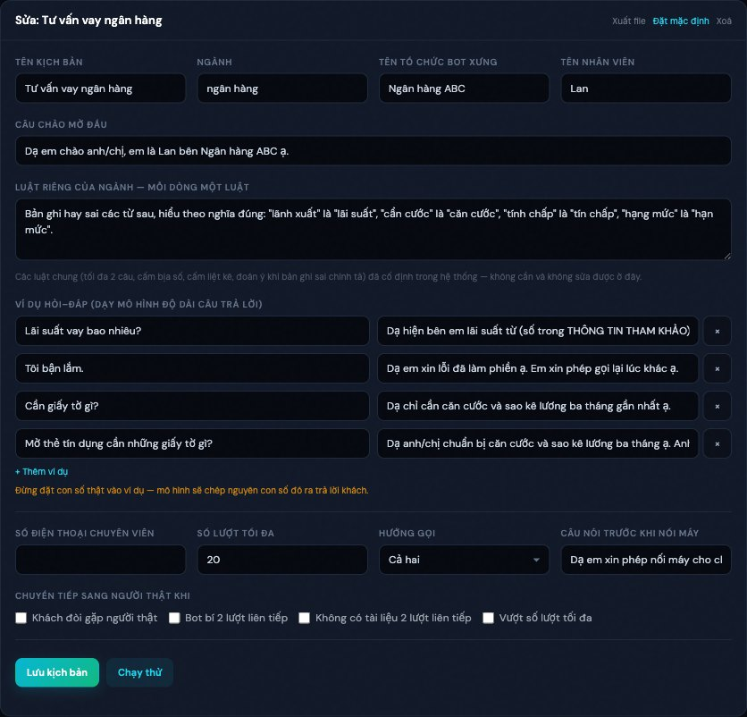
- 1Bốn ô định danh
Tên kịch bản · ngành (ngân hàng / bảo hiểm…) · tên tổ chức · tên nhân viên AI.
Điều kiện Tên tổ chức và tên nhân viên ở đây đè lên giá trị đặt ở trang Cài đặt.
Vì sao Một máy có thể chạy nhiều kịch bản cho nhiều bên; xưng danh phải theo kịch bản chứ không theo cấu hình chung.
- 2Câu chào mở đầu
Câu bot nói ngay khi khách nhấc máy.
Điều kiện Thường ghi cứng tên tổ chức trong câu này.
Vì sao Đây là lý do đổi tên ngân hàng ở trang Cài đặt vẫn chưa đủ — câu chào giữ tên cũ cho tới khi bạn sửa ở đây.
- 3Luật riêng của ngành
Ghi những từ mà bộ nghe hay chép sai, kèm cách hiểu đúng.
Điều kiện Áp cho mọi lượt trong kịch bản này.
Vì sao Bộ nghe chép sai tên sản phẩm là bot trả lời lạc đề mà không ai biết vì sao; dạy trước ở đây rẻ hơn sửa sau.
- 4Ví dụ khách nói → bot trả lời
Các cặp mẫu dạy bot giọng điệu và cách trả lời.
Điều kiện Thêm bằng nút “+ Thêm ví dụ”, xoá bằng dấu
×.Vì sao Vài ví dụ cụ thể chỉnh giọng điệu tốt hơn nhiều câu mô tả trừu tượng.
- 5Chuyển máy và giới hạn lượt
Số máy chuyển tiếp · số lượt tối đa · hướng gọi (ra / vào / cả hai) · câu nói khi chuyển.
Điều kiện Đạt số lượt tối đa thì bot dừng hoặc chuyển người thật.
Vì sao Giới hạn lượt là phanh an toàn: bot lặp vòng với khách khó tính sẽ tốn tiền và gây phiền, cắt sớm rồi chuyển người thật là đúng hơn.
- 6Lưu kịch bản · Chạy thử
Lưu, hoặc thử ngay kịch bản vừa sửa.
Điều kiện Chạy thử mở phiên thử, không gọi cho ai.
Vì sao Đặt hai nút cạnh nhau để sửa xong thử được luôn, không phải nhớ sang trang khác.
- 7Đặt mặc định · Xoá
Chọn kịch bản dùng khi không chỉ định gì khác, hoặc xoá hẳn.
Điều kiện Luôn phải có ít nhất một kịch bản mặc định.
Vì sao Cuộc gọi vào không có chỗ chọn kịch bản, nên bắt buộc phải có một cái mặc định.
Màn hiện ra khi bấm
Thêm một số vào danh bạ
Mở bằng + Thêm số ở trang Danh bạ gọi. Khai một khách lẻ.
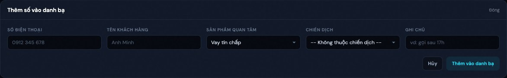
- 1Số điện thoại
Số sẽ quay. Ví dụ trong ô:
0912 345 678.Điều kiện Bắt buộc.
Vì sao Là khoá nhận dạng khách trong toàn hệ thống — báo cáo và phiên gọi đều tra ngược theo số này.
- 2Tên khách
Tên bot dùng để xưng hô.
Điều kiện Để trống thì bot xưng chung chung.
Vì sao Gọi đúng tên ngay câu đầu là thứ giữ khách ở lại nghe hết câu chào.
- 3Sản phẩm
Sản phẩm sẽ tư vấn cho khách này.
Điều kiện Quyết định bot tra tài liệu nào.
Vì sao Gán theo từng khách chứ không theo cả đợt, vì một danh sách có thể pha nhiều nhu cầu khác nhau.
- 4Chiến dịch
Xếp khách này vào một đợt gọi.
Điều kiện Để trống thì không thuộc chiến dịch nào và sẽ không bị máy tự quay.
Vì sao Đây là công tắc an toàn: số chưa gán chiến dịch thì chạy tự động không đụng tới.
- 5Ghi chú
Ghi chú tự do. Ví dụ trong ô: gọi sau 17h.
Điều kiện Không ảnh hưởng tới việc quay số.
Vì sao Chỗ để người vận hành ghi lại điều máy không biết — như khách dặn giờ gọi.
- 6Thêm vào danh bạ
Lưu số vào danh bạ.
Điều kiện Chưa gọi ngay.
Vì sao Tách việc thêm số khỏi việc gọi, để nhập cả danh sách rồi mới quyết định lúc nào chạy.
Màn hiện ra khi bấm
Nhập danh sách hàng loạt
Mở bằng Nhập danh sách. Hai lối vào: tải file CSV, hoặc dán thẳng danh sách.
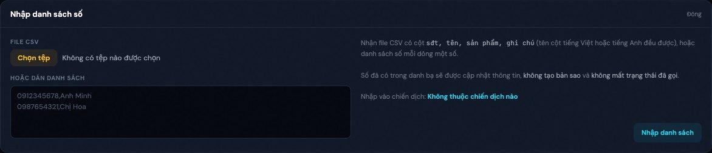
0912345678,Anh Minh — số trước, tên sau, mỗi khách một dòng.- 1Chọn file CSV
Nạp từ file.
Điều kiện Dùng khi danh sách xuất từ hệ thống khác.
Vì sao Danh sách thật thường vài trăm số, không dán tay được.
- 2Ô dán danh sách
Dán trực tiếp, mỗi dòng một khách: số phẩy tên.
Điều kiện Ví dụ mờ trong ô chính là định dạng đúng.
Vì sao Có đường dán để thêm chục số mà không phải tạo file — và ví dụ đặt sẵn trong ô thì không cần đọc tài liệu.
- 3Nhập danh sách
Chạy nhập.
Điều kiện Số trùng sẽ được xử theo quy tắc của hệ thống, không nhân đôi.
Vì sao Nhập lại cùng một file là chuyện thường; nhân đôi số là gọi khách hai lần.
Màn hiện ra khi bấm
Thêm thiết bị gọi
Mở bằng + Thêm thiết bị ở trang Thiết bị. Khai máy dùng để quay số.
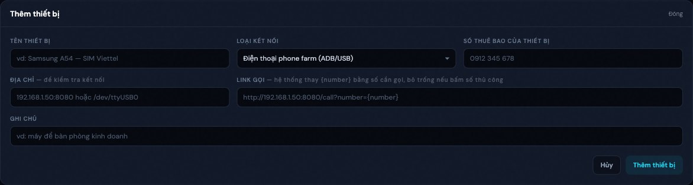
- 1Tên thiết bị
Tên gợi nhớ. Ví dụ: Samsung A54 — SIM Viettel.
Điều kiện Chỉ để bạn nhận ra máy.
Vì sao Dàn máy chục cái giống hệt nhau; đặt tên kèm nhà mạng là cách duy nhất biết máy nào đang rụng.
- 2Kiểu thiết bị
Điện thoại phone farm (ADB/USB), hoặc kiểu khác.
Điều kiện Quyết định hệ thống điều khiển máy bằng đường nào.
Vì sao ADB và gateway nói hai giao thức khác hẳn nhau; chọn sai là không quay được số.
- 3Số điện thoại của máy
Số SIM đang lắp trong máy.
Điều kiện Là số hiện lên máy khách.
Vì sao Cần biết để đối chiếu khi khách gọi lại vào đúng số đó.
- 4Địa chỉ
Ví dụ:
192.168.1.50:8080hoặc/dev/ttyUSB0.Điều kiện Tuỳ kiểu thiết bị mà điền địa chỉ mạng hay cổng nối tiếp.
Vì sao Hai kiểu máy có hai dạng địa chỉ; ô ví dụ nêu cả hai để không phải tra tài liệu.
- 5Đường gọi (dial URL)
Địa chỉ hệ thống gọi tới để quay số. Ví dụ:
http://192.168.1.50:8080/call?number={number}.Điều kiện
{number}là chỗ hệ thống thay bằng số thật.Vì sao Để nguyên chuỗi mẫu mà quên phần
{number}là mọi cuộc đều gọi vào cùng một số — lỗi khó nhìn ra nhất trong khối này. - 6Ghi chú
Ghi chú tự do về máy.
Điều kiện Không ảnh hưởng hoạt động.
Vì sao Ghi vị trí vật lý của máy để lúc nó rụng thì biết đi đâu mà cắm lại.
- 7Thêm thiết bị
Lưu máy vào danh sách.
Điều kiện Sau khi lưu nên bấm Kiểm tra ở trang Thiết bị.
Vì sao Khai xong không đảm bảo chạy được; bộ kiểm mới là thứ xác nhận.
Màn hiện ra khi bấm
Nhận cuộc gọi đến
Mở bằng Nhận cuộc gọi đến ở trang Thiết bị. Khai máy nào tự trả lời cuộc gọi vào và trả lời bằng kịch bản nào.
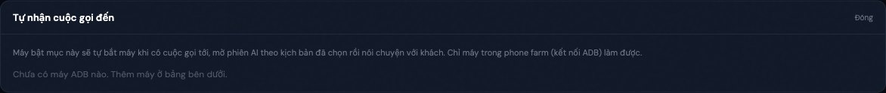
- 1Bảng máy nhận cuộc gọi vào
Mỗi dòng là một máy, kèm kịch bản dùng khi có cuộc gọi vào và độ trễ trước khi bắt máy.
Điều kiện Rỗng cho tới khi có thiết bị. Cần khai máy ở “+ Thêm thiết bị” trước.
Vì sao Gọi vào và gọi ra là hai luồng tách biệt: một máy có thể chỉ gọi ra mà không nhận vào, nên phải bật riêng từng máy chứ không bật chung.
Màn hiện ra khi bấm
Thêm nguồn dữ liệu
Mở bằng + Thêm nguồn. Khai file dữ liệu và cách bot dùng nó.
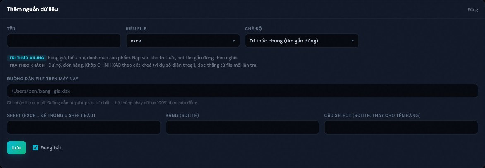
- 1Tên nguồn
Tên gợi nhớ cho nguồn dữ liệu.
Điều kiện Dùng để tìm trong danh sách.
Vì sao Danh sách nguồn phình nhanh khi mỗi sản phẩm một bảng.
- 2Kiểu file
excel · csv · sqlite.
Điều kiện Phải khớp file thật, không đoán theo đuôi tên.
Vì sao Ba kiểu đọc bằng ba cách khác nhau; khai sai là đọc ra 0 dòng.
- 3Chế độ dùng
Tri thức chung (tìm gần đúng) hoặc Tra theo khách.
Điều kiện Đây là ô quyết định cách bot dùng file.
Vì sao “Tìm gần đúng” hợp với văn bản — hỏi đại ý cũng ra. “Tra theo khách” hợp với bảng — cần khớp chính xác một dòng theo số điện thoại hoặc mã khách. Chọn nhầm là bot tra ra dòng của người khác.
- 4Đường dẫn file
Đường dẫn cục bộ. Ví dụ:
/Users/ban/bang_gia.xlsx.Điều kiện Chỉ nhận đường dẫn trên máy, không nhận link mạng.
Vì sao Hệ thống chạy offline hoàn toàn — không có đường nào gọi ra internet.
- 5Sheet · Bảng · Câu truy vấn
Chỉ định lấy sheet nào của Excel, bảng nào trong SQLite, và câu truy vấn nếu cần.
Điều kiện Điền theo kiểu file đã chọn; ô không liên quan để trống.
Vì sao Trước đây người dùng phải tự biết tên bảng bên trong file
.db; giờ tải lên rồi chọn từ danh sách dò được. - 6Lưu và công tắc bật
Lưu nguồn, kèm ô tick bật / tắt nguồn.
Điều kiện Tắt thì nguồn vẫn còn trong danh sách nhưng bot không tra.
Vì sao Có công tắc để tạm ngắt một nguồn đang lỗi mà không phải xoá rồi khai lại.
Màn hiện ra khi bấm
Soạn tình huống câu đệm
Mở bằng + Tình huống ở trang Câu đệm. Dạy máy nhận ra khách đang nói chuyện gì để chọn câu đệm cho khớp.
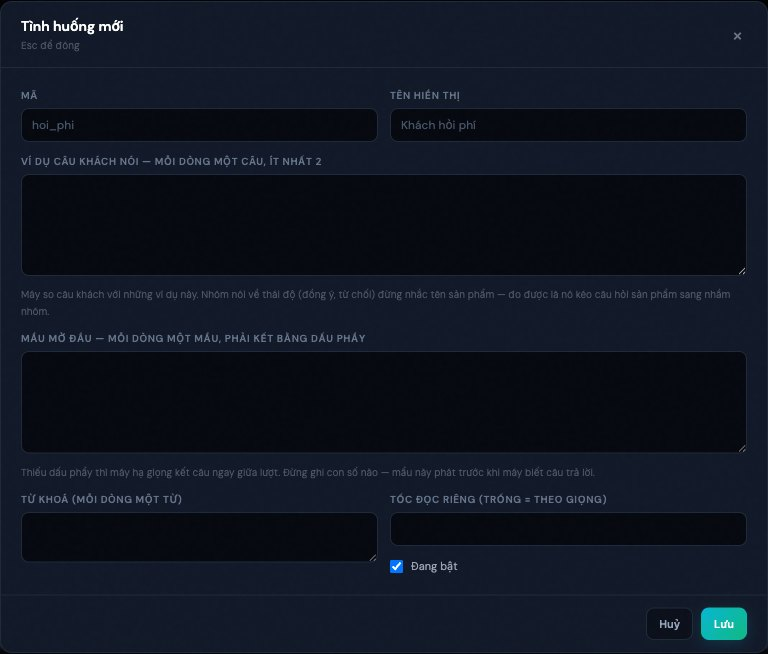
- 1Mã tình huống
Mã ngắn không dấu. Ví dụ:
hoi_phi.Điều kiện Dùng làm khoá, không hiện cho khách.
Vì sao Cần một khoá ổn định để tra cứu, tách khỏi tên hiển thị vốn hay được sửa.
- 2Tên tình huống
Tên tiếng Việt. Ví dụ: Khách hỏi phí.
Điều kiện Hiện trong bảng tình huống.
Vì sao Người vận hành đọc tên, máy đọc mã.
- 3Ví dụ câu khách nói
Các câu mẫu mà khách thường nói trong tình huống này.
Điều kiện Máy so khớp câu khách đang nói dở với các ví dụ này.
Vì sao Máy chấm điểm trên phiên âm cụt, vì câu đệm phải phát trước khi khách nói xong. Nên ví dụ nên viết như nửa câu đầu, đừng viết câu hoàn chỉnh dài.
- 4Mẩu mở đầu
Câu bot nói khi nhận ra tình huống này.
Điều kiện Ghép với một câu đuôi dùng chung để thành câu đệm hoàn chỉnh.
Vì sao Tách mở đầu và đuôi để nhân số câu: 5 mở đầu × 42 đuôi cho 210 câu khác nhau, đỡ lặp mà không phải viết tay 210 câu.
- 5Từ khoá
Từ khoá phụ trợ cho việc nhận dạng.
Điều kiện Dùng kèm phần so khớp ví dụ.
Vì sao Có từ khoá cứng để bắt các ca mà so khớp theo nghĩa bỏ sót.
- 6Tốc đọc riêng
Tốc đọc cho câu đệm của tình huống này.
Điều kiện Bỏ trống thì dùng tốc chung của giọng.
Vì sao Câu đệm ngắn và cần thoát ra nhanh; đọc chậm như câu tư vấn thì mất tác dụng lấp quãng im.
- 7Bật tình huống
Bật / tắt tình huống này.
Điều kiện Tắt thì máy bỏ qua khi so khớp.
Vì sao Tắt tạm rẻ hơn xoá, vì tình huống viết ra mất công và có thể cần lại.
- 8Lưu
Lưu tình huống.
Điều kiện Sau khi lưu phải bấm Dựng tiếng ở trang Câu đệm thì câu mới có file âm.
Vì sao Tách hai bước vì dựng tiếng chạy lâu; thêm liền mấy tình huống rồi dựng một lượt sẽ nhanh hơn.
Phụ lục
“Mảnh” là gì — và vì sao nó quyết định mọi thứ
Khi khách hỏi, hệ thống không đưa cả tài liệu cho AI đọc. Nó tìm vài mảnh giống câu hỏi nhất rồi chỉ đưa mấy mảnh đó. Mảnh vì thế là đơn vị nhỏ nhất mà AI nhìn thấy — và cũng là đơn vị mà mọi sai sót bắt đầu.
Ba hệ quả trực tiếp, đều thấy được trong ảnh chụp phía trên:
- ACâu bị bẻ giữa từ
Tài liệu
the_tin_dungdài 725 ký tự. Mảnh 1 lấy ký tự 1–500, mảnh 2 bắt đầu từ ký tự 450 (500 trừ 50 chồng lấn). Ký tự 450 rơi đúng giữa chữ “nhập”, nên mảnh 2 mở đầu bằngập từ 5 triệu đồng/tháng.Hậu quả AI đọc mảnh đó thấy “ập từ 5 triệu” và không biết đó là thu nhập.
- BBảng dài mất dòng tiêu đề
Bảng lãi suất 25 dòng dài hơn 500 ký tự nên bị chặt làm nhiều mảnh. Chỉ mảnh đầu giữ được dòng tên cột.
Hậu quả Các mảnh sau chứa số mà không biết số của cột nào — kỳ hạn 6 tháng hay 12 tháng, lãi gửi hay lãi vay.
- CMảnh không có tiêu đề thì mất danh tính
Chỉ mảnh đầu tiên chứa dòng
# Tên sản phẩm.Hậu quả Mảnh giữa tài liệu chứa lãi suất nhưng không mang tên sản phẩm; AI đọc số mà không biết của ai.
## để chia tài liệu thành phần ngắn hơn. Chỗ cắt sẽ rơi vào ranh giới
sạch thay vì giữa câu. Đó cũng chính là câu mà bộ soi gợi ý mỗi khi nó bắt được lỗi
“mảnh bắt đầu từ giữa câu”.Phụ lục
Bảy luật của bộ soi tài liệu
Đây là các dòng đỏ và vàng hiện dưới ô nội dung trong hộp soạn tài liệu. Bộ soi cảnh báo chứ không chặn lưu — chặn người vận hành sửa lãi suất lúc gấp còn tệ hơn để họ lưu một tài liệu chưa đẹp.
| Mã | Mức | Bộ soi nói gì | Vì sao nó là vấn đề |
|---|---|---|---|
| nhieu_so_thap_phan | LỖI | “Có N số thập phân: 0.5, 3.4, 6.8, 7.9, 8.2” | Hàng rào chặn mô hình đọc sai số chỉ chạy khi tài liệu có đúng MỘT số thập phân. Nhiều số thì nó bỏ qua, vì đoán bừa còn tệ hơn. Cách sửa: tách mục ví dụ tính toán sang tài liệu riêng, giữ lại một con số quan trọng nhất. |
| du_lieu_mau | LỖI | Còn tên “Ngân hàng ABC” của bản cài mẫu | Lãi suất và hạn mức trong tài liệu mẫu là số bịa để chạy thử. Còn dấu vết này nghĩa là bot đang đọc số bịa cho khách. |
| thieu_tieu_de | CẢNH BÁO | Không có dòng tiêu đề mở đầu bằng # |
Không có nó thì mảnh đầu tiên không mang tên sản phẩm, AI đọc số mà không biết của ai. |
| ten_khong_khop | CẢNH BÁO | Tên file không khớp tiêu đề trong nội dung | Lưới lọc sản phẩm neo theo tên file, không đọc nội dung. Tên lệch là lọc không bao giờ ăn, và bot có thể đọc lãi suất sản phẩm khác cho khách. Chỉ áp cho nhóm Sản phẩm. |
| so_mo_ho | CẢNH BÁO | Số đứng sau chữ không chắc chắn: “khoảng”, “lên đến”, “từ” | Tám chữ bị bắt: từ · khoảng · lên đến · lên tới · tối đa · tối thiểu · tuỳ · tùy.
Bot đọc nguyên văn cho khách nghe, mà “lãi suất từ 7.9%” nghe qua điện thoại thành một
lời hứa. Cách sửa: ghi con số cụ thể, hoặc nói rõ điều kiện đi kèm mức đó. |
| bang_mat_tieu_de | CẢNH BÁO | N mảnh có bảng nhưng mất dòng tiêu đề sau khi cắt | Bảng dài bị chặt làm đôi theo số ký tự; nửa sau mất tên cột. Cách sửa: chia thành nhiều bảng ngắn, mỗi bảng có tiêu đề cột riêng. |
| cat_giua_y | CẢNH BÁO | N mảnh bắt đầu từ giữa câu | Chỗ cắt rơi vào giữa ý. Máy gắn cờ khi ký tự đầu mảnh là chữ thường hoặc chữ số mà không
phải số thứ tự danh sách. Cách sửa: thêm tiêu đề con ##. |
Phụ lục
Những màn tài liệu này chưa chụp được
Nói rõ ra để bạn biết chỗ nào còn thiếu, thay vì tưởng đã đủ. Tất cả đều vì máy chụp thiếu dữ liệu hoặc thiếu mô hình, không phải vì màn đó không tồn tại.
| Màn | Ở đâu | Cần gì mới hiện ra |
|---|---|---|
| Cài đặt chiến dịch | Danh bạ gọi → Cài đặt khác | Phải có ít nhất một chiến dịch |
| Chi tiết cuộc gọi | Báo cáo → bấm một dòng | Phải có cuộc gọi thật |
| Chi tiết phiên | Phiên gọi → bấm một dòng | Phải có phiên đã chạy |
| Bộ thu âm 60 câu | Training giọng → bước 2 | Nhập tên giọng rồi bấm mở |
| Tiến độ luyện mô hình | Training LLM · Training giọng | Phải có buổi luyện đang chạy |
| Kết quả benchmark | Benchmark → Chạy Test | Cần mô hình nghe và đọc tiếng |
| Kết quả phát thử giọng | Giọng nói · Test giọng | Cần mô hình đọc tiếng |
| Ứng viên đoạn mẫu | Giọng nói → Bản ghi dài | Cần tải một bản thu dài hơn 30 giây |